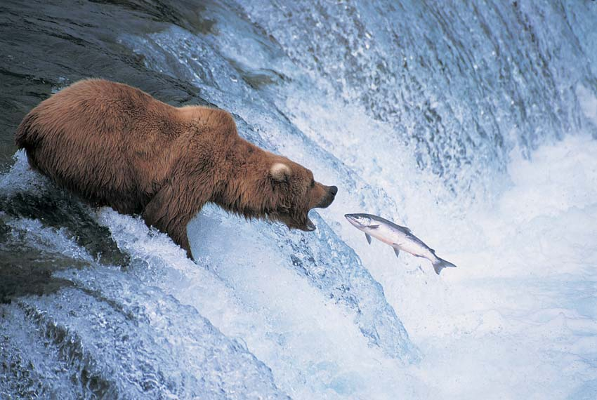
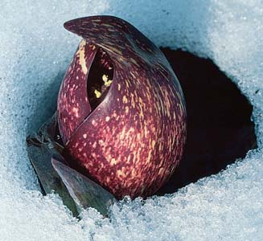
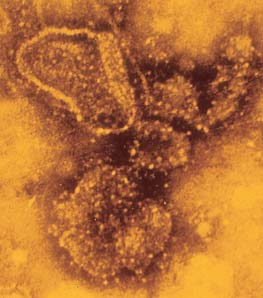
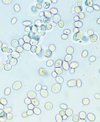

<!DOCTYPE html>
<html xmlns="http://www.w3.org/1999/xhtml" lang="es" xml:lang="es"><head>

<meta charset="utf-8">
<meta name="generator" content="quarto-1.5.53">

<meta name="viewport" content="width=device-width, initial-scale=1.0, user-scalable=yes">

<meta name="author" content="Marcelo Amores">

<title>8 ¿Cómo producen ATP las células? Rutas de liberación de energía – BIOLOGÍA SOLOMON</title>
<style>
code{white-space: pre-wrap;}
span.smallcaps{font-variant: small-caps;}
div.columns{display: flex; gap: min(4vw, 1.5em);}
div.column{flex: auto; overflow-x: auto;}
div.hanging-indent{margin-left: 1.5em; text-indent: -1.5em;}
ul.task-list{list-style: none;}
ul.task-list li input[type="checkbox"] {
  width: 0.8em;
  margin: 0 0.8em 0.2em -1em; /* quarto-specific, see https://github.com/quarto-dev/quarto-cli/issues/4556 */ 
  vertical-align: middle;
}
</style>


<script src="site_libs/quarto-nav/quarto-nav.js"></script>
<script src="site_libs/quarto-nav/headroom.min.js"></script>
<script src="site_libs/clipboard/clipboard.min.js"></script>
<script src="site_libs/quarto-search/autocomplete.umd.js"></script>
<script src="site_libs/quarto-search/fuse.min.js"></script>
<script src="site_libs/quarto-search/quarto-search.js"></script>
<meta name="quarto:offset" content="./">
<link href="./09-fotosintesis.html" rel="next">
<link href="./07-energia-y-metabolismo.html" rel="prev">
<link href="./images/Icono_E.png" rel="icon" type="image/png">
<script src="site_libs/quarto-html/quarto.js"></script>
<script src="site_libs/quarto-html/popper.min.js"></script>
<script src="site_libs/quarto-html/tippy.umd.min.js"></script>
<script src="site_libs/quarto-html/anchor.min.js"></script>
<link href="site_libs/quarto-html/tippy.css" rel="stylesheet">
<link href="site_libs/quarto-html/quarto-syntax-highlighting.css" rel="stylesheet" class="quarto-color-scheme" id="quarto-text-highlighting-styles">
<link href="site_libs/quarto-html/quarto-syntax-highlighting-dark.css" rel="prefetch" class="quarto-color-scheme quarto-color-alternate" id="quarto-text-highlighting-styles">
<script src="site_libs/bootstrap/bootstrap.min.js"></script>
<link href="site_libs/bootstrap/bootstrap-icons.css" rel="stylesheet">
<link href="site_libs/bootstrap/bootstrap.min.css" rel="stylesheet" class="quarto-color-scheme" id="quarto-bootstrap" data-mode="light">
<link href="site_libs/bootstrap/bootstrap-dark.min.css" rel="prefetch" class="quarto-color-scheme quarto-color-alternate" id="quarto-bootstrap" data-mode="dark">
<script id="quarto-search-options" type="application/json">{
  "location": "navbar",
  "copy-button": false,
  "collapse-after": 3,
  "panel-placement": "end",
  "type": "overlay",
  "limit": 50,
  "keyboard-shortcut": [
    "f",
    "/",
    "s"
  ],
  "show-item-context": false,
  "language": {
    "search-no-results-text": "Sin resultados",
    "search-matching-documents-text": "documentos encontrados",
    "search-copy-link-title": "Copiar el enlace en la búsqueda",
    "search-hide-matches-text": "Ocultar resultados adicionales",
    "search-more-match-text": "resultado adicional en este documento",
    "search-more-matches-text": "resultados adicionales en este documento",
    "search-clear-button-title": "Borrar",
    "search-text-placeholder": "",
    "search-detached-cancel-button-title": "Cancelar",
    "search-submit-button-title": "Enviar",
    "search-label": "Buscar"
  }
}</script>
<!-- Verificación de Google -->

<meta name="google-site-verification" content="EYveEP5I9oi6m-r8Qa_Fett47y3RJFqSizYYvf7G1RM">


<!-- Canonical URL dinámico -->

<link rel="canonical" link:"{{="" page.url="" |="" absolute_url="" }}"="">


  <script src="https://cdnjs.cloudflare.com/polyfill/v3/polyfill.min.js?features=es6"></script>
  <script src="https://cdn.jsdelivr.net/npm/mathjax@3/es5/tex-chtml-full.js" type="text/javascript"></script>

<script type="text/javascript">
const typesetMath = (el) => {
  if (window.MathJax) {
    // MathJax Typeset
    window.MathJax.typeset([el]);
  } else if (window.katex) {
    // KaTeX Render
    var mathElements = el.getElementsByClassName("math");
    var macros = [];
    for (var i = 0; i < mathElements.length; i++) {
      var texText = mathElements[i].firstChild;
      if (mathElements[i].tagName == "SPAN") {
        window.katex.render(texText.data, mathElements[i], {
          displayMode: mathElements[i].classList.contains('display'),
          throwOnError: false,
          macros: macros,
          fleqn: false
        });
      }
    }
  }
}
window.Quarto = {
  typesetMath
};
</script>

</head>

<body class="nav-sidebar floating nav-fixed">

<div id="quarto-search-results"></div>
  <header id="quarto-header" class="headroom fixed-top">
    <nav class="navbar navbar-expand-lg " data-bs-theme="dark">
      <div class="navbar-container container-fluid">
      <div class="navbar-brand-container mx-auto">
    <a href="./index.html" class="navbar-brand navbar-brand-logo">
    
    </a>
  </div>
            <div id="quarto-search" class="" title="Buscar"></div>
          <button class="navbar-toggler" type="button" data-bs-toggle="collapse" data-bs-target="#navbarCollapse" aria-controls="navbarCollapse" role="menu" aria-expanded="false" aria-label="Navegación de palanca" onclick="if (window.quartoToggleHeadroom) { window.quartoToggleHeadroom(); }">
  <span class="navbar-toggler-icon"></span>
</button>
          <div class="collapse navbar-collapse" id="navbarCollapse">
            <ul class="navbar-nav navbar-nav-scroll me-auto">
  <li class="nav-item">
    <a class="nav-link active" href="./index.html" aria-current="page"> 
<span class="menu-text">Inicio</span></a>
  </li>  
  <li class="nav-item">
    <a class="nav-link" href="https://envinatu.github.io/biologia/"> 
<span class="menu-text">Biología</span></a>
  </li>  
  <li class="nav-item">
    <a class="nav-link" href="https://envinatu.github.io/quimica/"> 
<span class="menu-text">Química</span></a>
  </li>  
  <li class="nav-item">
    <a class="nav-link" href="https://envinatu.github.io/geociencias"> 
<span class="menu-text">Geociencias</span></a>
  </li>  
  <li class="nav-item">
    <a class="nav-link" href="https://envinatu.github.io/pedagogia"> 
<span class="menu-text">Educación</span></a>
  </li>  
  <li class="nav-item">
    <a class="nav-link" href="https://envinatu.github.io/rubick"> 
<span class="menu-text">Ludociencia</span></a>
  </li>  
  <li class="nav-item">
    <a class="nav-link" href="https://envinatu.github.io/blog"> 
<span class="menu-text">Blog</span></a>
  </li>  
  <li class="nav-item">
    <a class="nav-link" href="https://envinatu.github.io/amores"> 
<span class="menu-text">Sobre Mi</span></a>
  </li>  
</ul>
            <ul class="navbar-nav navbar-nav-scroll ms-auto">
  <li class="nav-item compact">
    <a class="nav-link" href="https://github.com/envinatu/bio27/blob/main/docs/BIOLOGÍA-2025-2026-2027.pdf"> <i class="bi bi-filetype-pdf" role="img" aria-label="Ver PDF">
</i> 
<span class="menu-text"></span></a>
  </li>  
  <li class="nav-item compact">
    <a class="nav-link" href="https://github.com/envinatu/bio27/blob/main/docs/BIOLOGÍA-2025-2026-2027.epub"> <i class="bi bi-journal-bookmark-fill" role="img" aria-label="Ver eBook">
</i> 
<span class="menu-text"></span></a>
  </li>  
  <li class="nav-item compact">
    <a class="nav-link" href="https://www.linkedin.com/in/marceloamores/"> <i class="bi bi-linkedin" role="img" aria-label="Marcelo Amores LinkedIn">
</i> 
<span class="menu-text"></span></a>
  </li>  
  <li class="nav-item compact">
    <a class="nav-link" href="https://github.com/envinatu"> <i class="bi bi-github" role="img" aria-label="Envinatu GitHub">
</i> 
<span class="menu-text"></span></a>
  </li>  
</ul>
          </div> <!-- /navcollapse -->
            <div class="quarto-navbar-tools">
  <a href="" class="quarto-color-scheme-toggle quarto-navigation-tool  px-1" onclick="window.quartoToggleColorScheme(); return false;" title="Alternar modo oscuro"><i class="bi"></i></a>
  <a href="" class="quarto-reader-toggle quarto-navigation-tool px-1" onclick="window.quartoToggleReader(); return false;" title="Alternar modo lector">
  <div class="quarto-reader-toggle-btn">
  <i class="bi"></i>
  </div>
</a>
</div>
      </div> <!-- /container-fluid -->
    </nav>
  <nav class="quarto-secondary-nav">
    <div class="container-fluid d-flex">
      <button type="button" class="quarto-btn-toggle btn" data-bs-toggle="collapse" role="button" data-bs-target=".quarto-sidebar-collapse-item" aria-controls="quarto-sidebar" aria-expanded="false" aria-label="Alternar barra lateral" onclick="if (window.quartoToggleHeadroom) { window.quartoToggleHeadroom(); }">
        <i class="bi bi-layout-text-sidebar-reverse"></i>
      </button>
        <nav class="quarto-page-breadcrumbs" aria-label="breadcrumb"><ol class="breadcrumb"><li class="breadcrumb-item"><a href="./08-produccion-de-atp.html"><span class="chapter-title">8 ¿Cómo producen ATP las células? Rutas de liberación de energía</span></a></li></ol></nav>
        <a class="flex-grow-1" role="navigation" data-bs-toggle="collapse" data-bs-target=".quarto-sidebar-collapse-item" aria-controls="quarto-sidebar" aria-expanded="false" aria-label="Alternar barra lateral" onclick="if (window.quartoToggleHeadroom) { window.quartoToggleHeadroom(); }">      
        </a>
    </div>
  </nav>
</header>
<!-- content -->
<div id="quarto-content" class="quarto-container page-columns page-rows-contents page-layout-article page-navbar">
<!-- sidebar -->
  <nav id="quarto-sidebar" class="sidebar collapse collapse-horizontal quarto-sidebar-collapse-item sidebar-navigation floating overflow-auto">
    <div class="sidebar-menu-container"> 
    <ul class="list-unstyled mt-1">
        <li class="sidebar-item">
  <div class="sidebar-item-container"> 
  <a href="./index.html" class="sidebar-item-text sidebar-link">
 <span class="menu-text">Presentación</span></a>
  </div>
</li>
        <li class="sidebar-item">
  <div class="sidebar-item-container"> 
  <a href="./000-prefacio.html" class="sidebar-item-text sidebar-link">
 <span class="menu-text">Prefacio</span></a>
  </div>
</li>
        <li class="sidebar-item">
  <div class="sidebar-item-container"> 
  <a href="./001-al-estudiante.html" class="sidebar-item-text sidebar-link">
 <span class="menu-text">Al estudiante</span></a>
  </div>
</li>
        <li class="sidebar-item">
  <div class="sidebar-item-container"> 
  <a href="./01-una-vision-de-la-vida.html" class="sidebar-item-text sidebar-link"><span class="chapter-title">1 Una visión de la vida</span></a>
  </div>
</li>
        <li class="sidebar-item">
  <div class="sidebar-item-container"> 
  <a href="./02-atomos-y-moleculas.html" class="sidebar-item-text sidebar-link"><span class="chapter-title">2 Átomos y moléculas: la base química de la vida</span></a>
  </div>
</li>
        <li class="sidebar-item">
  <div class="sidebar-item-container"> 
  <a href="./03-quimica-de-la-vida.html" class="sidebar-item-text sidebar-link"><span class="chapter-title">3 La química de la vida: Compuestos orgánicos</span></a>
  </div>
</li>
        <li class="sidebar-item">
  <div class="sidebar-item-container"> 
  <a href="./04-organizacion-de-la-celula.html" class="sidebar-item-text sidebar-link"><span class="chapter-title">4 Organización de la célula</span></a>
  </div>
</li>
        <li class="sidebar-item">
  <div class="sidebar-item-container"> 
  <a href="./05-membranas-biologicas.html" class="sidebar-item-text sidebar-link"><span class="chapter-title">5 Membranas biológicas</span></a>
  </div>
</li>
        <li class="sidebar-item">
  <div class="sidebar-item-container"> 
  <a href="./06-comunicacion-celular.html" class="sidebar-item-text sidebar-link"><span class="chapter-title">6 Comunicación celular</span></a>
  </div>
</li>
        <li class="sidebar-item">
  <div class="sidebar-item-container"> 
  <a href="./07-energia-y-metabolismo.html" class="sidebar-item-text sidebar-link"><span class="chapter-title">7 Energía y metabolismo</span></a>
  </div>
</li>
        <li class="sidebar-item">
  <div class="sidebar-item-container"> 
  <a href="./08-produccion-de-atp.html" class="sidebar-item-text sidebar-link active"><span class="chapter-title">8 ¿Cómo producen ATP las células? Rutas de liberación de energía</span></a>
  </div>
</li>
        <li class="sidebar-item">
  <div class="sidebar-item-container"> 
  <a href="./09-fotosintesis.html" class="sidebar-item-text sidebar-link"><span class="chapter-title">9 Fotosíntesis: captura de energía luminosa</span></a>
  </div>
</li>
        <li class="sidebar-item">
  <div class="sidebar-item-container"> 
  <a href="./10-mitosis-y-meiosis.html" class="sidebar-item-text sidebar-link"><span class="chapter-title">10 Cromosomas, mitosis y meiosis</span></a>
  </div>
</li>
        <li class="sidebar-item">
  <div class="sidebar-item-container"> 
  <a href="./11-herencia.html" class="sidebar-item-text sidebar-link"><span class="chapter-title">11 Los principios básicos de la herencia</span></a>
  </div>
</li>
        <li class="sidebar-item">
  <div class="sidebar-item-container"> 
  <a href="./12-adn.html" class="sidebar-item-text sidebar-link"><span class="chapter-title">12 ADN: Molécula portadora de la información genética</span></a>
  </div>
</li>
        <li class="sidebar-item">
  <div class="sidebar-item-container"> 
  <a href="./13-expresion-genica.html" class="sidebar-item-text sidebar-link"><span class="chapter-title">13 Expresión génica</span></a>
  </div>
</li>
        <li class="sidebar-item">
  <div class="sidebar-item-container"> 
  <a href="./14-regulacion-genica.html" class="sidebar-item-text sidebar-link"><span class="chapter-title">14 Regulación génica</span></a>
  </div>
</li>
        <li class="sidebar-item">
  <div class="sidebar-item-container"> 
  <a href="./15-tecnologia-adn.html" class="sidebar-item-text sidebar-link"><span class="chapter-title">15 Tecnología ADN y genómica</span></a>
  </div>
</li>
        <li class="sidebar-item">
  <div class="sidebar-item-container"> 
  <a href="./16-genetica-humana.html" class="sidebar-item-text sidebar-link"><span class="chapter-title">16 Genética humana y el genoma humano</span></a>
  </div>
</li>
        <li class="sidebar-item">
  <div class="sidebar-item-container"> 
  <a href="./17-genetica-del-desarrollo.html" class="sidebar-item-text sidebar-link"><span class="chapter-title">17 Genética del desarrollo</span></a>
  </div>
</li>
        <li class="sidebar-item">
  <div class="sidebar-item-container"> 
  <a href="./18-evolucion-darwiniana.html" class="sidebar-item-text sidebar-link"><span class="chapter-title">18 Introducción a la evolución darwiniana</span></a>
  </div>
</li>
        <li class="sidebar-item">
  <div class="sidebar-item-container"> 
  <a href="./19-cambio-en-poblaciones.html" class="sidebar-item-text sidebar-link"><span class="chapter-title">19 Cambio evolutivo en poblaciones</span></a>
  </div>
</li>
        <li class="sidebar-item">
  <div class="sidebar-item-container"> 
  <a href="./20-especiacion.html" class="sidebar-item-text sidebar-link"><span class="chapter-title">20 Especiación y macroevolución</span></a>
  </div>
</li>
        <li class="sidebar-item">
  <div class="sidebar-item-container"> 
  <a href="./21-historia-evolutiva.html" class="sidebar-item-text sidebar-link"><span class="chapter-title">21 El origen e historia evolutiva de la vida</span></a>
  </div>
</li>
        <li class="sidebar-item">
  <div class="sidebar-item-container"> 
  <a href="./22-evolucion-de-primates.html" class="sidebar-item-text sidebar-link"><span class="chapter-title">22 La evolución de los primates</span></a>
  </div>
</li>
        <li class="sidebar-item">
  <div class="sidebar-item-container"> 
  <a href="./23-sistematica.html" class="sidebar-item-text sidebar-link"><span class="chapter-title">23 Comprensión de la diversidad: sistemática</span></a>
  </div>
</li>
        <li class="sidebar-item">
  <div class="sidebar-item-container"> 
  <a href="./24-virus.html" class="sidebar-item-text sidebar-link"><span class="chapter-title">24 Virus y agentes subvirales</span></a>
  </div>
</li>
        <li class="sidebar-item">
  <div class="sidebar-item-container"> 
  <a href="./25-bacterias-y-arqueas.html" class="sidebar-item-text sidebar-link"><span class="chapter-title">25 Bacterias y arqueas</span></a>
  </div>
</li>
        <li class="sidebar-item">
  <div class="sidebar-item-container"> 
  <a href="./26-protistas.html" class="sidebar-item-text sidebar-link"><span class="chapter-title">26 Protistas</span></a>
  </div>
</li>
        <li class="sidebar-item">
  <div class="sidebar-item-container"> 
  <a href="./27-plantas-sin-semillas.html" class="sidebar-item-text sidebar-link"><span class="chapter-title">27 Plantas sin semillas</span></a>
  </div>
</li>
        <li class="sidebar-item">
  <div class="sidebar-item-container"> 
  <a href="./28-plantas-con-semillas.html" class="sidebar-item-text sidebar-link"><span class="chapter-title">E</span></a>
  </div>
</li>
        <li class="sidebar-item">
  <div class="sidebar-item-container"> 
  <a href="./29-hongos.html" class="sidebar-item-text sidebar-link"><span class="chapter-title">29 Los hongos</span></a>
  </div>
</li>
        <li class="sidebar-item">
  <div class="sidebar-item-container"> 
  <a href="./30-diversidad-animal.html" class="sidebar-item-text sidebar-link"><span class="chapter-title">30 Introducción a la diversidad animal</span></a>
  </div>
</li>
        <li class="sidebar-item">
  <div class="sidebar-item-container"> 
  <a href="./31-protostomos.html" class="sidebar-item-text sidebar-link"><span class="chapter-title">31 Esponjas, cnidarios, ctenóforos y protóstomos</span></a>
  </div>
</li>
        <li class="sidebar-item">
  <div class="sidebar-item-container"> 
  <a href="./32-deuterostomos.html" class="sidebar-item-text sidebar-link"><span class="chapter-title">32 Los deuteróstomos</span></a>
  </div>
</li>
        <li class="sidebar-item">
  <div class="sidebar-item-container"> 
  <a href="./33-crecimiento-vegetal.html" class="sidebar-item-text sidebar-link"><span class="chapter-title">33 Estructura, crecimiento y desarrollo vegetal</span></a>
  </div>
</li>
        <li class="sidebar-item">
  <div class="sidebar-item-container"> 
  <a href="./34-hoja.html" class="sidebar-item-text sidebar-link"><span class="chapter-title">L</span></a>
  </div>
</li>
        <li class="sidebar-item">
  <div class="sidebar-item-container"> 
  <a href="./35-tallo.html" class="sidebar-item-text sidebar-link"><span class="chapter-title">35 Estructura y transporte en el tallo</span></a>
  </div>
</li>
        <li class="sidebar-item">
  <div class="sidebar-item-container"> 
  <a href="./36-raices.html" class="sidebar-item-text sidebar-link"><span class="chapter-title">36 Raíces y nutrición mineral</span></a>
  </div>
</li>
        <li class="sidebar-item">
  <div class="sidebar-item-container"> 
  <a href="./37-reproduccion-plantas.html" class="sidebar-item-text sidebar-link"><span class="chapter-title">37 Reproducción en plantas con fl ores</span></a>
  </div>
</li>
        <li class="sidebar-item">
  <div class="sidebar-item-container"> 
  <a href="./38-respuestas-plantas.html" class="sidebar-item-text sidebar-link"><span class="chapter-title">38 Respuestas de desarrollo en plantas a señales externas e internas</span></a>
  </div>
</li>
        <li class="sidebar-item">
  <div class="sidebar-item-container"> 
  <a href="./39-introduccion-fisiologia-animal.html" class="sidebar-item-text sidebar-link"><span class="chapter-title">39 Estructura y función animal. Una introducción</span></a>
  </div>
</li>
        <li class="sidebar-item">
  <div class="sidebar-item-container"> 
  <a href="./40-proteccion-y-movimiento.html" class="sidebar-item-text sidebar-link"><span class="chapter-title">40 Protección, sostén y movimiento</span></a>
  </div>
</li>
        <li class="sidebar-item">
  <div class="sidebar-item-container"> 
  <a href="./41-senalizacion-neuronal.html" class="sidebar-item-text sidebar-link"><span class="chapter-title">41 Señalización neuronal</span></a>
  </div>
</li>
        <li class="sidebar-item">
  <div class="sidebar-item-container"> 
  <a href="./42-regulacion-neuronal.html" class="sidebar-item-text sidebar-link"><span class="chapter-title">42 Regulación neuronal</span></a>
  </div>
</li>
        <li class="sidebar-item">
  <div class="sidebar-item-container"> 
  <a href="./43-sentidos.html" class="sidebar-item-text sidebar-link"><span class="chapter-title">43 Sistemas sensoriales</span></a>
  </div>
</li>
        <li class="sidebar-item">
  <div class="sidebar-item-container"> 
  <a href="./44-transporte-interno.html" class="sidebar-item-text sidebar-link"><span class="chapter-title">44 Transporte interno</span></a>
  </div>
</li>
        <li class="sidebar-item">
  <div class="sidebar-item-container"> 
  <a href="./45-sistema-inmunologico.html" class="sidebar-item-text sidebar-link"><span class="chapter-title">45 El sistema inmunológico: Defensa interna</span></a>
  </div>
</li>
        <li class="sidebar-item">
  <div class="sidebar-item-container"> 
  <a href="./46-intercambio-gases.html" class="sidebar-item-text sidebar-link"><span class="chapter-title">46 Intercambio de gases</span></a>
  </div>
</li>
        <li class="sidebar-item">
  <div class="sidebar-item-container"> 
  <a href="./47-nutricion.html" class="sidebar-item-text sidebar-link"><span class="chapter-title">47 Procesamiento de alimentos y nutrición</span></a>
  </div>
</li>
        <li class="sidebar-item">
  <div class="sidebar-item-container"> 
  <a href="./48-osmorregulacion.html" class="sidebar-item-text sidebar-link"><span class="chapter-title">48 Osmorregulación y desecho de residuos metabólicos</span></a>
  </div>
</li>
        <li class="sidebar-item">
  <div class="sidebar-item-container"> 
  <a href="./49-regulacion-endocrina.html" class="sidebar-item-text sidebar-link"><span class="chapter-title">49 Regulación endocrina</span></a>
  </div>
</li>
        <li class="sidebar-item">
  <div class="sidebar-item-container"> 
  <a href="./50-reproduccion-animal.html" class="sidebar-item-text sidebar-link"><span class="chapter-title">50 Reproducción</span></a>
  </div>
</li>
        <li class="sidebar-item">
  <div class="sidebar-item-container"> 
  <a href="./51-desarrollo-animal.html" class="sidebar-item-text sidebar-link"><span class="chapter-title">51 Desarrollo animal</span></a>
  </div>
</li>
        <li class="sidebar-item">
  <div class="sidebar-item-container"> 
  <a href="./52-comportamiento-animal.html" class="sidebar-item-text sidebar-link"><span class="chapter-title">52 Comportamiento animal</span></a>
  </div>
</li>
        <li class="sidebar-item">
  <div class="sidebar-item-container"> 
  <a href="./53-ecologia-de-poblaciones.html" class="sidebar-item-text sidebar-link"><span class="chapter-title">52.6 SELECCIÓN SEXUAL</span></a>
  </div>
</li>
        <li class="sidebar-item">
  <div class="sidebar-item-container"> 
  <a href="./54-ecologia-de-comunidades.html" class="sidebar-item-text sidebar-link"><span class="chapter-title">54 Ecología de comunidades</span></a>
  </div>
</li>
        <li class="sidebar-item">
  <div class="sidebar-item-container"> 
  <a href="./55-ecosistemas.html" class="sidebar-item-text sidebar-link"><span class="chapter-title">55 Ecosistemas y la biosfera</span></a>
  </div>
</li>
        <li class="sidebar-item">
  <div class="sidebar-item-container"> 
  <a href="./56-geografia-de-la-vida.html" class="sidebar-item-text sidebar-link"><span class="chapter-title">56 Ecología y geografía de la vida</span></a>
  </div>
</li>
        <li class="sidebar-item">
  <div class="sidebar-item-container"> 
  <a href="./57-conservacion.html" class="sidebar-item-text sidebar-link"><span class="chapter-title">57 Diversidad biológica y biología de la conservación</span></a>
  </div>
</li>
    </ul>
    </div>
</nav>
<div id="quarto-sidebar-glass" class="quarto-sidebar-collapse-item" data-bs-toggle="collapse" data-bs-target=".quarto-sidebar-collapse-item"></div>
<!-- margin-sidebar -->
    <div id="quarto-margin-sidebar" class="sidebar margin-sidebar">
        <nav id="TOC" role="doc-toc" class="toc-active">
    <h2 id="toc-title">Tabla de contenidos</h2>
   
  <ul>
  <li><a href="#l" id="toc-l" class="nav-link active" data-scroll-target="#l">L</a>
  <ul class="collapse">
  <li><a href="#reacciones-redox" id="toc-reacciones-redox" class="nav-link" data-scroll-target="#reacciones-redox">8.1 REACCIONES REDOX</a></li>
  <li><a href="#las-cuatro-etapas-de-la-respiración-aeróbica" id="toc-las-cuatro-etapas-de-la-respiración-aeróbica" class="nav-link" data-scroll-target="#las-cuatro-etapas-de-la-respiración-aeróbica">8.2 LAS CUATRO ETAPAS DE LA RESPIRACIÓN AERÓBICA</a></li>
  <li><a href="#e-e-e-1" id="toc-e-e-e-1" class="nav-link" data-scroll-target="#e-e-e-1">E E = e 1</a></li>
  </ul></li>
  <li><a href="#section" id="toc-section" class="nav-link" data-scroll-target="#section">˜</a></li>
  <li><a href="#section-1" id="toc-section-1" class="nav-link" data-scroll-target="#section-1">˜</a></li>
  <li><a href="#section-2" id="toc-section-2" class="nav-link" data-scroll-target="#section-2">˜</a>
  <ul class="collapse">
  <li><a href="#section-3" id="toc-section-3" class="nav-link" data-scroll-target="#section-3">˜</a></li>
  <li><a href="#producción-de-energía-a-partir-de-nutrientes-diferentes-a-la-glucosa" id="toc-producción-de-energía-a-partir-de-nutrientes-diferentes-a-la-glucosa" class="nav-link" data-scroll-target="#producción-de-energía-a-partir-de-nutrientes-diferentes-a-la-glucosa">8.3 PRODUCCIÓN DE ENERGÍA A PARTIR DE NUTRIENTES DIFERENTES A LA GLUCOSA</a></li>
  <li><a href="#respiración-anaeróbica-y-fermentación" id="toc-respiración-anaeróbica-y-fermentación" class="nav-link" data-scroll-target="#respiración-anaeróbica-y-fermentación">8.4 RESPIRACIÓN ANAERÓBICA Y FERMENTACIÓN</a></li>
  <li><a href="#resumen-enfoque-en-los-objetivos-de-aprendizaje" id="toc-resumen-enfoque-en-los-objetivos-de-aprendizaje" class="nav-link" data-scroll-target="#resumen-enfoque-en-los-objetivos-de-aprendizaje">■ ■ RESUMEN: ENFOQUE EN LOS OBJETIVOS DE APRENDIZAJE</a></li>
  </ul></li>
  </ul>
</nav>
    </div>
<!-- main -->
<main class="content" id="quarto-document-content">

<header id="title-block-header" class="quarto-title-block default">
<div class="quarto-title">
<h1 class="title"><span class="chapter-title">8 ¿Cómo producen ATP las células? Rutas de liberación de energía</span></h1>
</div>


<div class="quarto-title-meta">

    
    <div>
    <div class="quarto-title-meta-heading">Fecha de publicación</div>
    <div class="quarto-title-meta-contents">
      <p class="date">septiembre, 2025</p>
    </div>
  </div>
  
    
  </div>
  


</header>


<p>172</p>
<p>CONCEPTOS CLAVE</p>
<p>8.1 La respiración aeróbica es un proceso redox exergónico durante el cual la glucosa se oxida, el oxígeno se reduce, y la energía se captura para producir ATP. 8.2 La respiración aeróbica consiste en cuatro etapas: la glucólisis o glicólisis, la formación de acetil coenzima A, el ciclo del ácido cítrico y la cadena de transporte de electrones y la quimiosmosis. 8.3 Otros nutrientes diferentes de la glucosa, incluso muchos carbohidratos, lípidos y aminoácidos, se pueden oxidar mediante la respiración aeróbica. 8.4 La respiración anaeróbica y la fermentación son procesos redox donde se produce ATP mediante la oxidación de la glucosa, pero donde el oxígeno no se reduce. A cambio, estos procesos implican la reducción de sustancias inorgánicas (en la respiración anaeróbica) y de sustancias orgánicas (en la fermentación).</p>
<section id="l" class="level1">
<h1>L</h1>
<p>as células son pequeñas fábricas que procesan materiales a nivel molecular, a través de miles de reacciones metabólicas. Las células permanecen en un estado dinámico y continuamente están sintetizando y descomponiendo muchos de sus diferentes constituyentes. Como aprendió en el capítulo 7, el metabolismo tiene dos componentes complementarios: el catabolismo , que libera energía mediante la división de las moléculas complejas en componentes más pequeños, y el anabolismo , la síntesis de moléculas complejas a partir de bloques de construcción más simples. Las reacciones anabólicas sintetizan proteínas, ácidos nucleicos, lípidos, polisacáridos y otras moléculas que ayudan al mantenimiento de la célula o el organismo. La mayoría de las reacciones anabólicas son endergónicas y requieren de ATP o de alguna otra fuente de energía que las impulse. Todo organismo debe extraer energía de las moléculas de alimentos, que pueden ser elaborados mediante la fotosíntesis u obtenidos del entorno. Los osos pardos, como el de la fotografía, obtienen moléculas orgánicas a partir de su variada dieta de vegetales y animales. ¿Cómo obtienen energía de estas moléculas orgánicas? En primer lugar, las moléculas de los alimentos son descompuestos durante la digestión en componentes más simples que son absorbidos y transportados por la sangre a todas las células. Luego, dentro de las células ocurren los procesos catabólicos</p>
<p>Oso pardo ( Ursus arctos ). Este oso pardo intenta comer un salmón que se desplaza saltando, también come fruta, nueces, raíces, insectos y pequeños vertebrados como ratones y ardillas de tierra.</p>
<p>Digital Vision/Getty Images</p>
<div class="quarto-figure quarto-figure-center">
<figure class="figure">
<p></p>
<figcaption>08-produccion-de-atp_p206_img1.jpeg</figcaption>
</figure>
</div>
<p>¿Cómo producen ATP las células? Rutas de liberación de energía 173</p>
<p>que convierten la energía de los enlaces químicos de los nutrientes a energía química almacenada en forma de ATP, a través de un proceso conocido comúnmente como respiración celular . La respiración celular puede ser aeróbica o anaeróbica. La respiración aeróbica requiere oxígeno, mientras que las rutas anaeróbicas , que incluyen la respiración anaeróbica y la fermentación, no lo necesitan. En el proceso de la respiración organísmica (que se analiza en el capítulo 46), los pulmones suministran de manera continua oxígeno a las células para realizar la respiración aeróbica, que es por mucho la ruta más común para capturar energía y el objeto principal de este capítulo. Las tres rutas, la respiración aeróbica, la respiración anaeróbica y la fermentación son reacciones exergónicas y energía libre que la célula puede capturar.</p>
<section id="reacciones-redox" class="level2">
<h2 class="anchored" data-anchor-id="reacciones-redox">8.1 REACCIONES REDOX</h2>
<p>OBJETIVO DE APRENDIZAJE</p>
<p>1 Escribir una reacción resumida de la respiración aeróbica donde se muestre el reactivo que se oxida y el que se reduce.</p>
<p>La mayoría de las eucariotas y las procariotas realizan la respiración aeróbica , una forma de respiración celular que requiere oxígeno molecular (O 2 ). Durante la respiración aeróbica, los nutrientes se catabolizan en dióxido de carbono y agua. La mayoría de las células utilizan la respiración aeróbica para obtener energía de la glucosa, que entra en la célula a través de una proteína de transporte específi ca, en la membrana plasmática (vea el análisis de la difusión facilitada en el capítulo 5). La ruta de reacción general para la respiración aeróbica de la glucosa se resume como sigue:</p>
<p>C 6 H 12 O 6 + 6 O 2 + 6 H 2 O ¡ 6 CO 2 + 12 H 2 O + energía (en los enlaces químicos de ATP)</p>
<p>Observe que el agua se muestra en ambos lados de la ecuación porque es un reactivo en algunas reacciones y un producto en otros. Con fi nes de estudio, la ecuación para la respiración aeróbica se puede simplifi car a fi n de indicar que hay una producción neta de agua:</p>
<p>Oxidación C 6 H 12 O 6  6 O 2 6 CO 2  6 H 2 O  energía (en los enlaces químicos de ATP) Reducción</p>
<p>Si se analiza esta reacción resumida, parece que el CO 2 se produce por la eliminación de átomos de hidrógeno de la glucosa. A la inversa, el agua parece estar formada del oxígeno que acepta los átomos de hidrógeno. Debido a que la transferencia de átomos de hidrógeno es equivalente a la transferencia de electrones, esto es una reacción redox en la que la glucosa se oxida y el oxígeno se reduce (vea el análisis de las reacciones redox en los capítulos 2 y 7). Los productos de la reacción serían los mismos si la glucosa fuera simplemente puesta en un tubo de ensayo y se quemara en presencia de oxígeno. Sin embargo, si una célula fuera a quemar la glucosa, toda su energía sería liberada en forma de calor, que no sólo no estaría disponible para la célula, sino que también la destruiría. Por esta razón, las células no transfi eren átomos de hidrógeno directamente a partir de la glucosa al oxígeno. La respiración aeróbica incluye una serie de reacciones redox en las que los electrones asociados con los átomos de hidrógeno de la glucosa se transfi eren al oxígeno en una serie de etapas ( FIGURA 8-1 ). Durante este proceso, la energía libre de los electrones se acopla a la síntesis de ATP.</p>
<p>Repaso</p>
<p>■ En la reacción global de la respiración aeróbica, ¿qué reactivo se oxida y cuál se reduce?</p>
<p>■ ¿Cuál es la función específica del oxígeno en la mayoría de las células?</p>
</section>
<section id="las-cuatro-etapas-de-la-respiración-aeróbica" class="level2">
<h2 class="anchored" data-anchor-id="las-cuatro-etapas-de-la-respiración-aeróbica">8.2 LAS CUATRO ETAPAS DE LA RESPIRACIÓN AERÓBICA</h2>
<p>OBJETIVOS DE APRENDIZAJE</p>
<p>2 Identifi car y describir brevemente las cuatro etapas de la respiración aeróbica. 3 Indicar en qué parte de la célula eucariota se realiza cada etapa de la respiración aeróbica.</p>
<p>FIGURA 8-1 Cambios en la energía libre La liberación de la energía de una molécula de glucosa es análoga a la liberación de energía de un objeto que cae. La energía total liberada ( E ) es la misma si se produce todo de una vez o en una serie de pasos.</p>
</section>
<section id="e-e-e-1" class="level2">
<h2 class="anchored" data-anchor-id="e-e-e-1">E E = e 1</h2>
<p>e 1</p>
<ul>
<li>e 2</li>
</ul>
<p>e 2</p>
<ul>
<li><p>e 3 e 3 + e 4 e 4</p></li>
<li><p>e 5</p></li>
</ul>
<p>e 5</p>
<div class="quarto-figure quarto-figure-center">
<figure class="figure">
<p></p>
<figcaption>08-produccion-de-atp_p207_img1.jpeg</figcaption>
</figure>
</div>
<p>174 Capítulo 8</p>
<p>mitocondrias, las reacciones de la respiración aeróbica se producen en el citosol y en asociación con la membrana plasmática.</p>
<ol type="1">
<li>Glucólisis . Una molécula de glucosa de seis carbonos se convierte en dos moléculas de piruvato 1 de tres carbonos. Parte de la energía de la glucosa se captura con la formación de dos tipos de portado-</li>
</ol>
<p>4 Sumar o contabilizar la energía capturada (en forma de ATP, NADH y FADH 2 ) en cada etapa de la respiración aeróbica. 5 Defi nir quimiosmosis y explicar cómo se establece un gradiente de protones a través de la membrana mitocondrial interna. 6 Describir el proceso por el cual el gradiente de protones impulsa la síntesis de ATP en la quimiosmosis.</p>
<p>Las reacciones químicas de la respiración aeróbica de la glucosa se agrupan en cuatro etapas ( FIGURA 8-2 y TABLA 8-1 ; vea también el resumen de las ecuaciones al fi nal del capítulo). En las eucariotas, la primera etapa (glucólisis) se presenta en el citosol, y las etapas restantes ocurren dentro de las mitocondrias. La mayoría de las bacterias y arqueas también realizan estos procesos, pero debido a que las células procariotas carecen de</p>
<p>1 El piruvato y muchos otros compuestos que se forman en la respiración celular se encuentran como aniones en el pH normal de la célula. A veces se asocian con el H + para formar ácidos. Por ejemplo, el piruvato forma ácido pirúvico. En algunos libros de texto estos compuestos se presentan en la forma de ácido.</p>
<p>Las etapas de la respiración aeróbica se producen en lugares específi cos.</p>
<p>Formación de acetil coenzima A</p>
<p>Ciclo del ácido cítrico Transporte de electrones y quimiosmosis</p>
<p>Glucólisis</p>
<p>Glucosa</p>
<p>Piruvato</p>
<p>Mitocondria</p>
<p>Transporte de electrones y quimiosmosis</p>
<p>Ciclo del ácido cítrico</p>
<p>Acetil coenzima A</p>
<p>2 ATP 2 ATP 32 ATP</p>
<p>1 2 3 4</p>
<p>FIGURA 8-2 Animada Las cuatro etapas de la respiración aeróbica La glucólisis, la primera etapa de la respiración aeróbica, se produce en el citosol. El piruvato, producto de la glucólisis, entra en la mitocondria, donde la respiración celular continúa con la formación de acetil coenzima A (acetil CoA), el ciclo del ácido cítrico, y el transporte de electrones y la quimiosmosis. La mayor parte del ATP se sintetiza por quimiosmosis.</p>
<p>PUNTO CLAVE</p>
<p>Resumen de la respiración aeróbica</p>
<p>Etapa Resumen</p>
<p>Algunos materiales al inicio</p>
<p>Algunos productos al fi nal</p>
<ol type="1">
<li>Glucólisis (en el citosol) Serie de reacciones en las que la glucosa se degrada a piruvato; con una ganancia neta de 2 moléculas de ATP; los átomos de hidrógeno se transfi eren a los portadores; puede ocurrir anaeróbicamente</li>
</ol>
<p>Glucosa, ATP, NAD + , ADP, P i Piruvato, ATP, NADH</p>
<ol start="2" type="1">
<li>Formación de acetil CoA (en las mitocondrias)</li>
</ol>
<p>El piruvato se degrada y se combina con la coenzima A para formar acetil CoA; los átomos de hidrógeno se transfi eren a los portadores; se libera CO 2 Piruvato, coenzima A, NAD + Acetil CoA, CO 2 , NADH</p>
<ol start="3" type="1">
<li><p>Ciclo del ácido cítrico (en las mitocondrias) Serie de reacciones en las que la parte acetil del acetil CoA se degrada a CO 2 ; los átomos de hidrógeno se transfi eren a los portadores; se sintetiza ATP Acetil CoA, H 2 O, NAD + , FAD, ADP, P i CO 2 , NADH, FADH 2 , ATP</p></li>
<li><p>Transporte de electrones y quimiosmosis (en las mitocondrias)</p></li>
</ol>
<p>Cadena de varias moléculas de transporte de electrones; los electrones pasan a lo largo de la cadena; la energía liberada se utiliza para formar un gradiente de protones; el ATP se sintetiza a medida que los protones se difunden hacia abajo del gradiente; el oxígeno es el receptor fi nal de electrones</p>
<p>NADH, FADH 2 , O 2 , ADP, P i ATP, H 2 O, NAD + , FAD</p>
<p>TABLA 8-1</p>
<p>¿Cómo producen ATP las células? Rutas de liberación de energía 175</p>
<p>sión simplifi cada de la glucólisis, en la que una molécula de glucosa que consiste en seis carbonos se convierte en dos moléculas de piruvato , de tres carbonos. Parte de la energía de la glucosa se captura, hay una producción neta de dos moléculas de ATP y dos moléculas de NADH. Las reacciones de la glucólisis tienen lugar en el citosol, donde los reactivos necesarios, tales como ADP, NAD + , y el fosfato inorgánico, fl otan libremente y se usan cuando se necesitan. La ruta de la glucólisis consiste en una serie de reacciones, cada una de las cuales se cataliza por una enzima específi ca ( FIGURA 8-4 , páginas 178 y 179). La glucólisis se divide en dos grandes fases: la primera incluye las reacciones endergónicas que requieren ATP, y la segunda las reacciones exergónicas que producen ATP y NADH.</p>
<p>La primera fase de la glucólisis requiere una inversión de ATP</p>
<p>La primera fase de la glucólisis se llama a veces “fase de inversión de energía” (vea la fi gura 8.4, pasos 1 a 5). La glucosa es una molécula relativamente estable y no se descompone con facilidad. En dos reacciones de fosforilación independientes, un grupo fosfato se transfi ere del ATP al azúcar. El azúcar que resulta fosforilado (fructosa-1,6-bifosfato) es menos estable y se rompe enzimáticamente en dos moléculas de tres carbonos, la dihidroxiacetona fosfato y el gliceraldehído-3-fosfato (G3P). La dihidroxiacetona fosfato se convierte enzimáticamente a G3P, por lo que los productos en este punto de la glucólisis son dos moléculas de G3P por glucosa. Se puede resumir esta parte de la glucólisis de la siguiente manera:</p>
<p>glucosa + 2 ATP 2 G3P + 2 ADP Compuesto de seis carbonos</p>
<p>Compuesto de tres carbonos</p>
<p>La segunda fase de la glucólisis produce NADH y ATP</p>
<p>La segunda fase de la glucólisis se llama a veces la “fase de captura de energía” (vea la fi gura 8.4, pasos 6 a 10). Cada G3P se convierte en piruvato. En el primer paso de este proceso, cada G3P se oxida por la eliminación de 2 electrones (como parte de dos átomos de hidrógeno). Éstos inmediatamente se combinan con la molécula portadora de hidrógeno, NAD + :</p>
<p>NAD + + 2 H NADH + H +</p>
<p>Oxidado (de G3P) Reducido ¡</p>
<p>Debido a que hay dos moléculas de G3P por cada glucosa, se forman dos NADH. La energía de los electrones transportados por NADH se usa después para formar ATP. Este proceso se analiza en conjunto con la cadena de transporte de electrones. En dos de las reacciones que conducen a la formación del piruvato, el ATP se forma cuando un grupo fosfato se transfi ere al ADP de un intermediario fosforilado (vea la fi gura 8-4, pasos 7 y 10). Este proceso se llama fosforilación a nivel del sustrato . Observe que en la fase de inversión de energía de la glucólisis se consumen dos moléculas de ATP, pero en la fase de captura de energía se producen cuatro moléculas de ATP. Por lo tanto, la glucólisis produce una ganancia de energía neta de dos ATP por glucosa. Podemos resumir la fase de captura de energía de la glucólisis de la siguiente manera:</p>
<p>2 G3P + 2 NAD + + 4 ADP ¡ 2 piruvato + 2 NADH + 4 ATP</p>
<p>res de energía, ATP y NADH. 2 Vea el capítulo 7 para revisar cómo el ATP suministra energía mediante la transferencia de un grupo fosfato (vea las fi guras 7-5 y 7-6). La NADH es una molécula reducida que transfi ere energía mediante la donación de electrones, provenientes de un átomo de hidrógeno (vea la fi gura 7-7). 2. Formación de acetil coenzima A . Cada piruvato entra a la mitocondria y se oxida a un grupo de dos carbonos (el acetato). Luego se combina con la coenzima A, formando acetil coenzima A. Se produce NADH y el dióxido de carbono se libera como un producto de desecho. 3. El ciclo del ácido cítrico . El grupo acetato de la acetil coenzima A se combina con una molécula de cuatro carbonos (el oxaloacetato) para formar una molécula de seis carbonos (el citrato). En el curso del ciclo, el citrato se recicla a oxaloacetato, y el dióxido de carbono se libera como un producto de desecho. La energía se captura en forma de ATP y se reducen los compuestos de alta energía, NADH y FADH 2 (vea el capítulo 7 para revisar FADH 2 ). 4. Transporte de electrones y quimiosmosis. Los electrones eliminados de la glucosa en las etapas anteriores se transfi eren del NADH y del FADH 2 a una cadena de compuestos aceptores de electrones. Como los electrones se pasan de un aceptor de electrones a otro, parte de su energía se utiliza para transportar iones de hidrógeno (protones) a través de la membrana mitocondrial interna, formando un gradiente de protones. En un proceso conocido como quimiosmosis (que se describe más adelante), la energía de este gradiente de protones se utiliza para producir ATP.</p>
<p>La mayoría de las reacciones implicadas en la respiración aeróbica son uno de los tres tipos: deshidrogenaciones, descarboxilaciones, y los que de manera informal se categorizan como las reacciones de preparación. Las deshidrogenaciones son reacciones en las que dos átomos de hidrógeno (en realidad, 2 electrones más 1 o 2 protones) son eliminados del sustrato y transferidos a la NAD + o al FAD. Las descarboxilaciones son reacciones en las que se elimina una parte de un grupo carboxilo ( ¬ COOH) del sustrato como una molécula de CO 2 . El dióxido de carbono que exhala una persona con cada respiración se deriva de las descarboxilaciones que se producen en las células. El resto de las reacciones son de preparación en las que las moléculas se someten a reordenamientos y otros cambios de manera que puedan someterse a deshidrogenaciones adicionales o descarboxilaciones. Al examinar las reacciones individuales de la respiración aeróbica, se encontrará con estos tres tipos básicos. Para hacer un seguimiento de las reacciones de la respiración aeróbica, ayuda el hacer algun conteo conforme avanza. Debido a que la glucosa es el material inicial, es útil expresar los cambios por unidad de glucosa. Se prestará atención especial a los cambios en el número de átomos de carbono por molécula y a los pasos en los que ocurre algún tipo de transferencia de energía.</p>
<p>En la glucólisis, la glucosa produce dos piruvatos</p>
<p>La palabra glucólisis proviene de las palabras griegas que signifi can “división o rompimiento de azúcar”, que se refi ere al hecho de que el azúcar glucosa se metaboliza. La glucólisis no requiere oxígeno y ocurre bajo condiciones aeróbicas o anaeróbicas. La FIGURA 8-3 muestra una vi-</p>
<p>2 Aunque la forma correcta de escribir la forma reducida de NAD + es NADH + H + , por simplicidad se presenta la forma reducida como NADH en todo el libro.</p>
<p>176 Capítulo 8</p>
<p>La glucólisis incluye tanto la inversión como la captura de energía.</p>
<p>GLUCÓLISIS</p>
<p>Fase de inversión de energía y división de la glucosa Dos ATP invertidos por glucosa</p>
<p>Fase de captura de energía Cuatro ATP y dos NADH producidos por glucosa</p>
<p>Rendimiento neto por glucosa:</p>
<p>Dos ATP y dos NADH</p>
<p>Glucosa</p>
<p>Gliceraldehído fosfato (G3P)</p>
<p>Gliceraldehído fosfato (G3P)</p>
<p>Fructosa-1,6-bifosfato</p>
<p>3 pasos 2 ADP</p>
<p>(G3P) (G3P)</p>
<p>Piruvato Piruvato</p>
<p>5 pasos</p>
<p>P P</p>
<p>P P</p>
<p>P P</p>
<p>2 ATP</p>
<p>NAD +</p>
<p>2 ATP</p>
<p>2 ADP</p>
<p>NADH</p>
<p>NAD +</p>
<p>2 ATP</p>
<p>2 ADP</p>
<p>NADH</p>
<p>Formación de acetil coenzima A</p>
<p>Ciclo del ácido cítrico Transporte de electrones, y quimiosmosis</p>
<p>Glucólisis</p>
<p>Glucosa</p>
<p>Piruvato</p>
<p>2 ATP 2 ATP 32 ATP</p>
<p>FIGURA 8-3 Animada Una visión general de la glucólisis Las esferas negras representan átomos de carbono. La fase de la inversión de energía de la glucólisis da lugar a la división de azúcar; el ATP y el NADH se producen durante la fase de la captura de energía. Durante la glucólisis, cada molécula de glucosa se convierte en dos piruvatos, con un rendimiento neto de dos moléculas de ATP y dos moléculas de NADH.</p>
<p>PUNTO CLAVE</p>
<p>¿Cómo producen ATP las células? Rutas de liberación de energía 177</p>
<p>En el avance del ciclo del ácido cítrico, dos moléculas de CO 2 y el equivalente de ocho átomos de hidrógeno (8 protones y 8 electrones) se eliminan, formando tres NADH y un FADH 2 . Puede preguntarse por qué se generan más equivalentes de hidrógeno por estas reacciones que las que ingresaron al ciclo con la molécula de acetil CoA. Estos átomos de hidrógeno provienen de las moléculas de agua que se agregaron durante las reacciones del ciclo. Las cantidades de CO 2 producidas por los dos átomos de carbono del grupo acetilo que entraron al ciclo del ácido cítrico. Al fi nal de cada ciclo, el oxaloacetato de cuatro carbonos ha sido regenerado, y continúa el ciclo. Dado que dos moléculas de acetil CoA son producidas a partir de cada molécula de glucosa, se requieren dos ciclos por molécula de glucosa. Después de dos vueltas del ciclo, la glucosa original ha perdido todos sus átomos de carbono y se puede considerar que ha sido consumida completamente. En resumen, el ciclo del ácido cítrico produce cuatro CO 2 , seis NADH, dos FADH 2 y dos ATP por molécula de glucosa. En este punto de la respiración aeróbica, sólo cuatro moléculas de ATP se han formado por glucosa mediante fosforilación a nivel del sustrato: dos durante la glucólisis y dos durante el ciclo del ácido cítrico. La mayor parte de la energía de la molécula de glucosa original está en forma de electrones de alta energía en el NADH y el FADH 2 . Su energía se utilizará para sintetizar ATP adicional a través de la cadena transportadora de electrones y quimiosmosis.</p>
<p>La cadena de transporte de electrones está acoplada a la síntesis de ATP</p>
<p>La cadena de transporte de electrones (CTE) se considera el destino de todos los electrones eliminados de una molécula de glucosa durante los procesos de glucólisis, formación de acetil CoA, y ciclo del ácido cítrico. Recuerde que estos electrones se transfi rieron como parte de los átomos de hidrógeno a los aceptores NAD + y FAD, formando NADH y FADH 2 . Estos compuestos reducidos ahora entran en la cadena de transporte de electrones , en donde los electrones de alta energía de los átomos de hidrógeno son transportados de un aceptor a otro. Conforme los electrones pasan a lo largo de una serie de reacciones redox exergónicas, parte de su energía se utiliza para impulsar la síntesis del ATP, que es un proceso endergónico. Debido a que la síntesis de ATP (por la fosforilación del ADP) está acoplada a las reacciones redox en la cadena de transporte de electrones, todo el proceso se conoce como fosforilación oxidativa .</p>
<p>La cadena de transporte electrónico transfi ere electrones del NADH y FADH 2 al oxígeno</p>
<p>La cadena de transporte de electrones esta conformada por una serie de portadores de electrones incrustados en la membrana mitocondrial interna de las eucariotas y en la membrana plasmática de las procariotas aerobias. Al igual que NADH y FADH 2 , cada portador existe en una forma oxidada o en una forma reducida. Los electrones pasan por la cadena transportadora de electrones en una serie de reacciones redox que funciona como una brigada de cubetas, la antigua cadena humana en la que las personas pasaban cubetas de agua de un arroyo de una a otra, hasta un edifi cio que estaba en llamas. En la cadena de transporte de electrones, cada molécula receptora alternadamente se reduce cuando acepta electrones y se oxida a medida que los cede. Los electrones que entran en la cadena de transporte de electrones tienen un contenido energético relativamente alto. Pierden parte de su energía en cada paso conforme pasan a lo largo de la cadena de portadores de electrones (al igual que parte del agua se derrama de la cubeta, cuando se pasa de una persona a otra).</p>
<p>El piruvato se convierte en acetil CoA</p>
<p>En las eucariotas, las moléculas de piruvato formadas en la glucólisis entran en la mitocondria, donde se convierten en acetil coenzima A (acetil CoA) . Estas reacciones se producen en el citosol de las procariotas aerobias. En esta serie de reacciones, el piruvato sufre un proceso conocido como descarboxilación oxidativa . Primero, un grupo carboxilo se elimina como dióxido de carbono, que se difunde fuera de la célula ( FIGURA 8-5 ). Después el fragmento restante de dos carbonos se oxida, y la NAD + acepta los electrones eliminados durante la oxidación. Por último, el fragmento de dos carbonos oxidados, un grupo acetilo, se une a la coenzima A , produciendo acetil CoA. El piruvato deshidrogenasa es la enzima que cataliza estas reacciones, es un complejo multienzimático enorme ¡qué consiste en 72 cadenas de polipéptidos! Recuerde del capítulo 7 que la coenzima A transfi ere grupos derivados de ácidos orgánicos. En este caso, la coenzima A transfi ere un grupo acetilo, que está relacionado con el ácido acético. La coenzima A se fabrica en la célula a partir de una de las vitaminas B, el ácido pantoténico. La reacción total para la formación de la acetil coenzima A es:</p>
<p>2 piruvato + 2 NAD + + 2 CoA ¡ 2 acetil CoA + 2 NADH + 2 CO 2</p>
<p>Observe que la molécula de glucosa original ha sido parcialmente oxidada, produciendo dos grupos acetilo y dos moléculas de CO 2 . Los electrones eliminados han reducido las moléculas de NAD + a NADH. En este punto de la respiración aeróbica, se han formado cuatro moléculas de NADH como resultado del catabolismo de una sola molécula de glucosa: dos durante la glucólisis y dos durante la formación de acetil CoA a partir del piruvato. Recuerde que estas moléculas de NADH se utilizarán más adelante (durante el transporte de electrones) para formar más moléculas de ATP.</p>
<p>El ciclo del ácido cítrico oxida la acetil CoA</p>
<p>El ciclo del ácido cítrico también se conoce como el ciclo de ácido tricarboxílico (TCA) y el ciclo de Krebs , en honor del bioquímico alemán Hans Krebs, quien reunió las contribuciones acumuladas de muchos científi cos y detalló el ciclo en la década de 1930. Recibió por esta contribución el Premio Nobel de Fisiología o Medicina en 1953. En la</p>
<p>FIGURA 8-6 , página 180, se presenta una descripción simplifi cada del ciclo del ácido cítrico, que tiene lugar en la matriz mitocondrial. Los ocho pasos del ciclo del ácido cítrico se muestran en la FIGURA 8-7 , página 181. Una enzima específi ca cataliza cada reacción. La primera reacción del ciclo se produce cuando la acetil CoA transfi ere su grupo acetilo de dos carbonos al compuesto aceptor oxaloacetato de cuatro carbonos, formando el citrato , un compuesto de seis carbonos.</p>
<p>oxaloacetato + acetil-CoA citrato + CoA Compuesto de cuatro-carbonos Compuesto de dos-carbonos Compuesto de seis-carbonos</p>
<p>El citrato entonces pasa por una serie de transformaciones químicas, perdiendo primero uno y después un segundo grupo carboxilo en forma de CO 2 . Un ATP se forma (por un grupo acetilo) por fosforilación a nivel del sustrato. La mayor parte de la energía proporcionada por los pasos oxidativos del ciclo se transfi ere como electrones ricos en energía al NAD + , formando NADH. Por cada grupo acetilo que entra en el ciclo del ácido cítrico, se producen tres moléculas de NADH (pasos 3, 4 y 8). Los electrones se transfi eren también al receptor de electrones FAD, formando FADH 2 .</p>
<p>178 Capítulo 8</p>
<p>FIGURA 8-4 Una vista detallada de la glucólisis Una enzima específi ca cataliza cada una de las reacciones en la glucólisis. Observe el rendimiento neto de dos moléculas de ATP y dos moléculas de NADH. (Las líneas onduladas negras indican enlaces que permiten a los fosfatos transferirse fácilmente a otras moléculas, en este caso, el ADP).</p>
<p>Hexoquinasa</p>
<p>Fosfoglucoisomerasa</p>
<p>Fosfofructoquinasa</p>
<p>Dihidroxiacetona fosfato</p>
<p>CH 2 P O</p>
<p>C O</p>
<p>CH 2 OH</p>
<p>Gliceraldehído-3-fosfato (G3P)</p>
<p>H</p>
<p>O</p>
<p>C O</p>
<p>CHOH</p>
<p>CH 2 P</p>
<p>CH 2</p>
<p>Fructosa-1,6-bifosfato</p>
<p>CH 2 O</p>
<p>H</p>
<p>OH H</p>
<p>H</p>
<p>P</p>
<p>HO</p>
<p>HO</p>
<p>O P O</p>
<p>Fructosa-6-fosfato</p>
<p>Glucosa-6-fostato</p>
<p>CH 2 O</p>
<p>H OH H</p>
<p>O</p>
<p>OH</p>
<p>H</p>
<p>OH</p>
<p>H</p>
<p>HO</p>
<p>H</p>
<p>P</p>
<p>Glucosa</p>
<p>CH 2 OH</p>
<p>H OH H</p>
<p>O</p>
<p>OH</p>
<p>H</p>
<p>OH</p>
<p>H</p>
<p>HO</p>
<p>H</p>
<p>Isomerasa</p>
<p>Aldolasa</p>
<p>ADP</p>
<p>ATP</p>
<p>ADP</p>
<p>H HO</p>
<p>CH 2 OH</p>
<p>CH 2 O O</p>
<p>OH H</p>
<p>H</p>
<p>P</p>
<p>La glucólisis comienza con la reacción de preparación en la que la glucosa recibe el grupo fosfato de la molécula de ATP. El ATP sirve como fuente tanto de fosfato como de energía necesaria para unir el fosfato a la molécula de glucosa. (Una vez que se consume el ATP, se convierte en ADP y se une al grupo del ADP de la célula hasta convertirse de nuevo en ATP). La glucosa fosforilada se conoce como glucosa-6-fosfato. (Observe que el fosfato está unido a su átomo de carbono 6). La fosforilación de la glucosa la hace químicamente más reactiva.</p>
<p>La glucosa-6-fosfato se somete a otra reacción de preparación, reorganizando sus átomos de hidrógeno y oxígeno. En esta reacción la glucosa-6-fosfato se convierte en su isómero, la fructosa-6-fosfato.</p>
<p>Ahora, otro ATP dona fosfato a la molécula, formando fructosa-1,6-bifosfato. Hasta el momento, se han invertido en el proceso dos moléculas de ATP, sin ningún tipo de producto. Los grupos fosfato están ahora unidos a los carbonos 1 y 6, y la molécula de glucosa está lista para ser dividida.</p>
<p>La fructosa-1,6-bifosfato se divide entonces en dos azúcares de 3 carbonos, el gliceraldehído-3-fosfato (G3P) y la dihidroxiacetona fosfato.</p>
<p>La dihidroxiacetona fosfato se convierte enzimáticamente a su isómero, gliceraldehído-3-fosfato, para aumentar el metabolismo en la glucólisis.</p>
<p>ATP</p>
<p>Fase de inversión de energía y división de la glucosa Dos moléculas de ATP son invertidas por cada molécula de glucosa</p>
<p>HO</p>
<p>1</p>
<p>2</p>
<p>3</p>
<p>4</p>
<p>5</p>
<p>¿Cómo producen ATP las células? Rutas de liberación de energía 179</p>
<p>Dos 3-fosfoglicerato</p>
<p>C</p>
<p>P</p>
<p>HC OH</p>
<p>H 2 C O</p>
<p>O</p>
<p>O –</p>
<p>Enolasa</p>
<p>Dos piruvatos</p>
<p>C</p>
<p>C</p>
<p>CH 3</p>
<p>O</p>
<p>O</p>
<p>Dos fosfoenol-piruvato</p>
<p>C</p>
<p>C</p>
<p>CH 2</p>
<p>O</p>
<p>O –</p>
<p>O –</p>
<p>O P</p>
<p>Dos 2-fosfoglicerato</p>
<p>C</p>
<p>HC O</p>
<p>H 2 C OH</p>
<p>O</p>
<p>O –</p>
<p>P</p>
<p>Dos 1,3-difosfoglicerato</p>
<p>C</p>
<p>P</p>
<p>C OH</p>
<p>H 2 C O</p>
<p>P</p>
<p>O</p>
<p>H</p>
<p>Piruvatoquinasa</p>
<p>Fase de captura de energía Cuatro moléculas de ATP y dos de NADH son producidas por cada molécula de glucosa 2 NAD +</p>
<p>2 NADH</p>
<p>Gliceraldehído-3-fosfato deshidrogenasa</p>
<p>2 ADP</p>
<p>2 ATP</p>
<p>2 ADP</p>
<p>2 ATP</p>
<p>2 H 2 O</p>
<p>Fosfogliceroquinasa</p>
<p>Fosfogliceromutasa</p>
<p>Cada molécula de gliceraldehído-3-fosfato se somete a deshidrogenación, con el NAD + como aceptor de hidrógeno. El producto de esta reacción muy exergónica es el fosfoglicerato, que reacciona con el fosfato inorgánico presente en el citosol para producir 1,3-difosfoglicerato.</p>
<p>Uno de los fosfatos de 1,3-difosfoglicerato reacciona con el ADP para formar ATP. Esta transferencia de fosfato del intermediario fosforilado al ATP se conoce como fosforilación a nivel del sustrato.</p>
<p>El 3-fosfoglicerato se reordena por acción enzimática a 2-fosfoglicerato, cambiando la posición del grupo fosfato. Ésta es una reacción de preparación.</p>
<p>Ahora, se elimina la molécula de agua, lo que resulta en la formación del doble enlace. El producto, fosfoenol-piruvato (PEP), tiene un grupo fosfato unido por un enlace inestable ( línea ondulada ).</p>
<p>Cada una de dos moléculas de PEP transfiere su grupo fosfato al ADP para producir ATP y piruvato. Ésta es una reacción de fosforilación a nivel del sustrato.</p>
<p>Dos gliceraldehído-3-fosfato (G3P) de la parte inferior de la página anterior</p>
</section>
</section>
<section id="section" class="level1">
<h1>˜</h1>
</section>
<section id="section-1" class="level1">
<h1>˜</h1>
<p>i P</p>
<p>6</p>
<p>7</p>
<p>8</p>
<p>9</p>
<p>10</p>
<p>180 Capítulo 8</p>
<p>ción de acetil CoA y el ciclo del ácido cítrico. El complejo II ( la s uccinatoubiquinona reductasa ) acepta los electrones de las moléculas de FADH 2 que se produjeron durante el ciclo del ácido cítrico. Ambos complejos I y II producen el mismo producto, la ubiquinona reducida, que es el sustrato del complejo III ( la ubiquinona-citocromo c oxidorreductasa ). Es decir, el complejo III acepta electrones de la ubiquinona reducida y los pasa al citocromo c . El complejo IV ( la citocromo c oxidasa ) acepta los electrones de citocromo c y utiliza estos electrones para reducir el oxígeno molecular, formando agua en el proceso. Los electrones simultáneamente se unen con los protones del medio circundante para formar hidrógeno, y la reacción química entre el hidrógeno y el oxígeno produce agua. Debido a que el oxígeno es el aceptor fi nal de los electrones en la cadena de transporte de electrones, los organismos que respiran aeróbicamente requieren oxígeno. ¿Qué sucede cuando las células que son aerobias estrictas son privadas de oxígeno? El último citocromo en la cadena mantiene sus electrones cuando no hay oxígeno disponible para aceptarlas. Cuando esto ocurre, cada molécula aceptora en la cadena conserva sus electrones (cada uno permanece en su estado reducido) y la cadena completa bloquea todos los caminos de regreso al NADH.</p>
<p>Los miembros de la cadena de transporte de electrones incluyen la fl avo-proteína mononucleótido de fl avina ( FMN ), el lípido ubiquinona (también llamada coenzima Q o CoQ ), varias sulfoprote í nas de hierro , y un grupo estrechamente relacionado con las proteínas que contiene hierro llamado citocromos ( FIGURA 8-8 ). Cada portador de electrones tiene un mecanismo diferente para aceptar y transportar electrones. Conforme los citocromos aceptan y donan electrones, por ejemplo, la carga sobre el átomo de hierro, que es la parte portadora de electrones de los citocromos, se alterna entre Fe 2+ (reducido) y Fe 3+ (oxidado). Los científi cos han extraído y purifi cado de la cadena transportadora de electrones de la membrana mitocondrial interna, cuatro grandes complejos proteínicos distintos, o grupos de receptores (aceptores). El c omplejo I ( NADH ubiquinona oxidorreductasa ) acepta los electrones de las moléculas de NADH que se produjeron durante la glucólisis, la forma-</p>
<p>Formación de acetil coenzima A</p>
<p>Ciclo del ácido cítrico Transporte de electrones, y quimiosmosis</p>
<p>Glucólisis</p>
<p>Glucosa</p>
<p>Piruvato</p>
<p>2 ATP 2 ATP 32 ATP</p>
<p>O</p>
<p>C H 3 C</p>
<p>Piruvato</p>
<p>Acetil coenzima A</p>
<p>H 3 C C</p>
<p>O</p>
<p>S CoA</p>
<p>NAD + Coenzima A</p>
<p>Dióxido de carbono CO 2</p>
<p>C</p>
<p>O</p>
<p>O</p>
<p>NADH</p>
</section>
<section id="section-2" class="level1">
<h1>˜</h1>
<p>–</p>
<p>Acetil coenzima A Coenzima A</p>
<p>Citrato</p>
<p>NAD +</p>
<p>NADH</p>
<p>CO 2</p>
<p>Compuesto de 5 carbonos</p>
<p>NAD +</p>
<p>NADH</p>
<p>CO 2 Compuesto de 4 carbonos</p>
<p>GTP GDP</p>
<p>ADP</p>
<p>ATP</p>
<p>FADH 2</p>
<p>FAD</p>
<p>NADH</p>
<p>NAD +</p>
<p>H 2 O CICLO DEL ÁCIDO CÍTRICO</p>
<p>Oxaloacetato</p>
<p>Formación de acetil coenzima A</p>
<p>Ciclo del ácido cítrico Transporte de electrones y quimiosmosis</p>
<p>Glucólisis</p>
<p>Glucosa</p>
<p>Piruvato</p>
<p>2 ATP 2 ATP 32 ATP</p>
<p>FIGURA 8-6 Animada Vista general del ciclo del ácido cítrico Por cada glucosa, dos grupos acetilo entran en el ciclo del ácido cítrico ( parte superior ). Cada grupo acetilo de dos carbonos se combina con un compuesto de cuatro carbonos, el oxaloacetato, para formar el citrato compuesto de seis carbonos. Se eliminan dos moléculas de CO 2 , y la energía se captura como un ATP, tres NADH y un FADH 2 por grupo acetilo (o dos ATP, seis NADH y dos FADH 2 por cada molécula de glucosa).</p>
<p>FIGURA 8-5 La formación de acetil CoA Esta serie de reacciones se cataliza por el complejo multienzimático piruvato deshidrogenasa. El piruvato, una molécula de tres carbonos que es el producto fi nal de la glucólisis, entra en la mitocondria y es sometido a descarboxilación oxidativa. Primero, el grupo carboxilo separa el dióxido de carbono. Después, el fragmento restante de dos carbonos se oxida, y sus electrones se transfi eren al NAD + . Por último, el grupo oxidado de dos carbonos (un grupo acetilo), se une a la coenzima A. La CoA tiene un átomo de azufre que forma un enlace, (una línea negra ondulada) con el grupo acetilo. Cuando este enlace se rompe, el grupo acetilo se puede fácilmente transferir a otra molécula.</p>
<p>¿Cómo producen ATP las células? Rutas de liberación de energía 181</p>
<p>CO 2</p>
<p>Succinil coenzima A</p>
<p>C S</p>
<p>O</p>
<p>COO –</p>
<p>CH 2</p>
<p>CH 2</p>
<p>CoA</p>
<p>Isocitrato</p>
<p>Citrato</p>
<p>El enlace inestable que une el grupo acetilo a la coenzima A se rompe. El grupo acetilo de 2 carbonos se une a una molécula de oxaloacetato de 4 carbonos, formando el citrato, una molécula de 6 carbonos con tres grupos carboxilo. La coenzima A es libre para combinarse con otros grupos de 2 carbonos y repetir el proceso.</p>
<p>Los átomos del citrato se reordenan por dos reacciones de preparación: primero, se elimina una molécula de agua, y después se agrega una molécula de agua. A través de estas reacciones el citrato se convierte en su isómero, el isocitrato.</p>
<p>El isocitrato produce el α -cetoglutarato, compuesto de 5 carbonos, mediante la deshidrogenación y descarboxilación.</p>
<p>Ahora la α -cetoglutarato produce la succinil coenzima A, compuesta de 4 carbonos, mediante la descarboxilación y deshidrogenación. La reacción se cataliza por el complejo multienzimático similar al complejo que cataliza la conversión del piruvato a la acetil coenzima A.</p>
<p>La succinil coenzima A se convierte en succinato, y tiene lugar la fosforilación a nivel del sustrato. El enlace que unen la coenzima A al succinato (~S) es inestable. La ruptura de la succinil coenzima A se acopla a la fosforilación del GDP para formar GTP (un compuesto similar a ATP). El GTP transfiere su fosfato al ADP, produciendo ATP.</p>
<p>El succinato se oxida cuando dos de sus hidrógenos se transfieren al FAD, formando FADH 2 . El compuesto resultante es el fumarato.</p>
<p>Al agregar agua, el fumarato se convierte en malato.</p>
<p>El malato se deshidrogena, formando oxaloacetato. Dos hidrógenos eliminados se transfieren al NAD + . Ahora el oxaloacetato ya se puede combinar con otra molécula de acetil coenzima A, comenzando un nuevo ciclo.</p>
<p>C H</p>
<p>O</p>
<p>COO –</p>
<p>COO –</p>
<p>C</p>
<p>H</p>
<p>Oxaloacetato</p>
<p>α -cetoglutarato</p>
<p>Succinato</p>
<p>Fumarato</p>
<p>Malato</p>
<p>Acetil coenzima A</p>
<p>Glucosa Ácidos grasos</p>
<p>C H</p>
<p>COO –</p>
<p>COO –</p>
<p>C H</p>
<p>H</p>
<p>H</p>
<p>C COO – HO</p>
<p>C H</p>
<p>COO –</p>
<p>COO –</p>
<p>C H</p>
<p>H</p>
<p>C COO –</p>
<p>HO</p>
<p>H</p>
<p>C H</p>
<p>COO –</p>
<p>COO –</p>
<p>C O</p>
<p>H</p>
<p>C H H</p>
<p>COO –</p>
<p>C</p>
<p>C</p>
<p>COO –</p>
<p>H H</p>
<p>H H</p>
<p>COO –</p>
<p>C</p>
<p>C</p>
<p>COO –</p>
<p>H</p>
<p>H</p>
<p>H</p>
<p>C H</p>
<p>COO –</p>
<p>COO –</p>
<p>C OH</p>
<p>H</p>
<p>Malato deshidrogenasa Citrato sintetasa</p>
<p>Aconitasa</p>
<p>Isocitrato deshidrogenasa</p>
<p>-cetoglutarato deshidrogenasa α</p>
<p>Succinil CoA sintetasa</p>
<p>Succinato deshidrogenasa</p>
<p>Fumarasa</p>
<p>NADH</p>
<p>NAD +</p>
<p>Coenzima A</p>
<p>H 2 O</p>
<p>H 2 O</p>
<p>NAD +</p>
<p>H 2 O</p>
<p>NADH</p>
<p>NAD +</p>
<p>NADH</p>
<p>CO 2</p>
<p>Coenzima A</p>
<p>Coenzima A</p>
<p>GTP</p>
<p>GDP ADP</p>
<p>ATP</p>
<p>FADH 2</p>
<p>FAD</p>
<p>CICLO DEL ÁCIDO CÍTRICO</p>
<section id="section-3" class="level2">
<h2 class="anchored" data-anchor-id="section-3">˜</h2>
<p>1</p>
<p>2</p>
<p>3</p>
<p>4</p>
<p>5</p>
<p>6</p>
<p>7</p>
<p>8</p>
<p>FIGURA 8-7 Una vista detallada al ciclo del ácido cítrico Comienza con el paso 1, en la esquina superior derecha, donde la acetil coenzima A se une al oxaloacetato. Siga los pasos en el ciclo del ácido cítrico para ver que la entrada de un grupo acetilo de dos carbonos está equilibrada por la liberación de dos moléculas de CO 2 . Los electrones se transfi eren al NAD + o al FAD, produciendo NADH y FADH 2 , respectivamente, y se forma ATP por fosforilación a nivel del sustrato.</p>
<p>182 Capítulo 8</p>
<p>Aunque el fl ujo de electrones en el transporte de electrones está generalmente muy vinculado a la producción de ATP, algunos organismos desacoplan los dos procesos para producir calor (vea Preguntas acerca de: Transporte de electrones y calor ).</p>
<p>El modelo quimiosmótico explica el acoplamiento de la síntesis de ATP al transporte de electrones, en la respiración aeróbica</p>
<p>Durante décadas, los científi cos estaban conscientes de que la fosforilación oxidativa ocurre en las mitocondrias, y muchos experimentos les habían mostrado que la transferencia de 2 electrones de cada NADH al oxígeno (mediante la cadena de transporte de electrones) generalmente resulta en la producción de hasta tres moléculas de ATP. Sin embargo, durante mucho tiempo, la conexión entre la sínte-</p>
<p>Debido a que la fosforilación oxidativa está acoplada al transporte de electrones, no se produce ATP adicional por medio de la cadena de transporte de electrones. La mayoría de las células de los organismos multicelulares no pueden vivir mucho tiempo sin oxígeno debido a que la pequeña cantidad de ATP que producen por sí mismos mediante la glucólisis es insufi ciente para sostener los procesos vitales. La falta de oxígeno no es el único factor que interfi ere con la cadena de transporte de electrones. Algunos venenos, como el cianuro, inhiben la actividad normal de los citocromos. El cianuro se une fuertemente al hierro en el último citocromo en la cadena de transporte de electrones, por lo que es incapaz de transportar electrones al oxígeno. Esto bloquea el paso adicional de electrones a través de la cadena, y cesa la producción de ATP.</p>
<p>Los transportadores de electrones en la membrana mitocondrial interna transfi eren electrones del NADH y el FADH 2 al oxígeno.</p>
<p>O 2 O 2 1 2</p>
<p>FAD</p>
<p>Espacio intermembrana</p>
<p>Matriz de la mitocondria</p>
<p>NAD +</p>
<p>NADH</p>
<p>FADH 2</p>
<p>H 2 O H + 2</p>
<p>Citosol</p>
<p>Membrana mitocondrial interna</p>
<p>Complejo I: NADH-ubiquinona oxidorreductasa</p>
<p>Complejo II: Succinatoubiquinona reductasa</p>
<p>Complejo IV: Citocromo c oxidasa</p>
<p>Complejo III: Ubiquinona citocromo c oxidorreductasa</p>
<p>Membrana mitocondrial externa</p>
<p>FIGURA 8-8 Animada Una visión general de la cadena transportadora de electrones</p>
<p>Los electrones caen a niveles de energía cada vez menor a medida que pasan a lo largo de los cuatro complejos de la cadena transportadora de electrones situados en la membrana mitocondrial interna. (Las fl echas de color naranja indican el camino de los electrones). Los portadores dentro de cada complejo son alternativamente reducidos y oxidados,</p>
<p>ya que aceptan y donan electrones. El aceptor terminal es el oxígeno; uno de los dos átomos de una molécula de oxígeno (escrito como 1 – 2 O 2 ) acepta 2 electrones, que se agregan a 2 protones del medio circundante para producir agua.</p>
<p>PUNTO CLAVE</p>
<p>¿Cómo producen ATP las células? Rutas de liberación de energía 183</p>
<p>sis de ATP y el transporte de electrones permaneció como un misterio. En 1961, Peter Mitchell, un bioquímico británico, propuso el modelo quimiosmótico , que estaba basado en sus experimentos y en consideraciones teóricas. Un tipo de experimento implicó el uso de bacterias como un sistema modelo ( FIGURA 8-9 ). Debido a que la cadena de transporte de electrones respiratoria está localizada en la membrana plasmática de una célula bacteriana aerobia, la membrana plasmática bacteriana se puede considerar comparable a la membrana mitocondrial interna. Mitchell demostró que si las células bacterianas fueran colocadas en un ambiente ácido (es decir, un entorno con una alta concentración de iones de hidrógeno, o protones), las células sintetizarían ATP, aun cuando no hubiese transporte de electrones. Con base en éstos y otros experimentos, Mitchell propuso que el transporte de electrones y la síntesis de ATP están acoplados por medio de un gradiente de protones a través de la membrana mitocondrial interna en las eucariotas (o a través de la membrana plasmática de las bacterias). Su modelo era tan radical que no fue aceptado de inmediato, pero en 1978, se había acumulado tanta evidencia en apoyo de la quimiosmosis que Peter Mitchell recibió el Premio Nobel de Química. La cadena de transporte de electrones establece el gradiente de protones, parte de la energía liberada como electrones pasan por la cadena transportadora de electrones que se utiliza para mover protones (H + ) a través de una membrana. En las eucariotas los protones se mueven a través de la membrana mitocondrial</p>
<p>¿Cuál es la fuente del calor corporal? Esencialmente, es un subproducto de diversas reacciones exergónicas, en especial las que afectan a las cadenas de transporte de electrones en las mitocondrias. Algunos animales adaptados al frío, animales que hibernan y los animales recién nacidos producen cantidades inusualmente grandes de calor por el desacoplamiento del transporte de electrones en la producción de ATP. Estos animales tienen tejido adiposo (tejido en el que se almacena la grasa) que es café. El color café proviene del gran número de mitocondrias que se encuentran en estas células. Las membranas mitocondriales internas de estas mitocondrias contienen una proteína de desacoplamiento que produce un canal de protones pasivos a través de los cuales los protones fl uyen a la matriz mitocondrial. Como consecuencia, la mayor parte de la energía de la glucosa se convierte en calor en lugar de energía química en forma de ATP. Ciertas plantas, que generalmente no se consideran organismos “calientes” también tienen la capacidad de producir grandes cantidades de calor. Por ejemplo, la col fétida ( Symplocarpus foetidus ), que vive en los pantanos</p>
<p>de América del Norte y en los bosques húmedos, fl orece generalmente durante febrero y marzo, cuando el suelo está todavía cubierto de nieve (vea la fotografía). Las mitocondrias desacopladas de la planta generan grandes cantidades de calor, permitiéndole fundir la nieve y atraer a los insectos polinizadores al vaporizar ciertas moléculas odoríferas del aire circundante. La temperatura de la fl or de la col fétida es de 15° a 22°C (59° a 72°F) cuando el aire que la rodea es de –15° a 10°C (5° a 50°F). Las fl ores de la col fétida mantienen esta temperatura durante dos semanas o más. Otras plantas, como la fi lodendro de hoja dividida ( Philodendron selloum ) y el loto sagrado ( Nelumbo nucifera ) también generan calor cuando fl orecen y mantienen su temperatura dentro de límites precisos. Algunas de las plantas generan tanto o más calor por gramo de tejido que los animales en vuelo, que se han considerado los mayores productores de calor en el mundo de los vivos. La planta europea conocida como Aro en España y como señores-y-damas en el Reino Unido ( Arum maculatum ) por ejemplo, produce 0.4 J (0.1 cal) de calor por segundo</p>
<p>por gramo de tejido, mientras que un colibrí en vuelo produce 0.24 J (0.06 cal) por segundo por gramo de tejido.</p>
<p>Preguntas acerca de:</p>
<p>TRANSPORTE DE ELECTRONES Y CALOR</p>
<p>Col fétida ( Symplocarpus foetidus ) Esta planta no sólo produce una cantidad signifi cativa de calor cuando fl orece sino que también regula su temperatura dentro de un rango específi co.</p>
<p>Leonard Lee Rue III/Animals Animals</p>
<p>EXPERIMENTO CLAVE</p>
<p>PREGUNTA: ¿Cuál es el mecanismo de la fosforilación oxidativa?</p>
<p>HIPÓTESIS: Peter Mitchell propuso que la célula utiliza la energía liberada durante el transporte de electrones para crear un gradiente de protones a través de una membrana. La energía potencial inherente a dicho gradiente luego impulsa la síntesis de ATP.</p>
<p>EXPERIMENTO: Se colocaron las bacterias aerobias en un ambiente ácido (alta concentración de H + ), creando así un gradiente de protones a través de la membrana plasmática. Esto se hizo en condiciones en las que no se producen transporte de electrones.</p>
<p>ATP</p>
<p>Citoplasma bacteriano (de baja acidez)</p>
<p>Sintetizado</p>
<p>Membrana plasmática Ambiente ácido</p>
<p>H + H +</p>
<p>H +</p>
<p>H +</p>
<p>H +</p>
<p>H +</p>
<p>H +</p>
<p>H + H + H + H + H + H + H + H + H + H + H + H + H + H + H + H + H + H + H + H + H + H + H + H + H + H + H + H + H + H + H + H + H + H + H + H + H + H + H +</p>
<p>H +</p>
<p>H +</p>
<p>H +</p>
<p>RESULTADOS Y CONCLUSIÓN: Las bacterias sintetizaron ATP en ausencia de respiración aeróbica. Estos resultados apoyaron el punto de vista de Mitchell de que un gradiente de protones a través de una membrana constituye un eslabón esencial en la conversión de la energía eléctrica de la cadena transportadora de electrones a energía química en forma de ATP.</p>
<p>FIGURA 8-9 Evidencia para la quimiosmosis</p>
<div class="quarto-figure quarto-figure-center">
<figure class="figure">
<p></p>
<figcaption>08-produccion-de-atp_p217_img1.jpeg</figcaption>
</figure>
</div>
<div class="quarto-figure quarto-figure-center">
<figure class="figure">
<p></p>
<figcaption>08-produccion-de-atp_p217_img2.jpeg</figcaption>
</figure>
</div>
<p>184 Capítulo 8</p>
<p>rante la producción de ATP a partir del ADP y del fosfato inorgánico, una estructura central de la ATP sintasa gira, posiblemente en respuesta a la fuerza de protones que se mueven a través del complejo enzimático. Aparentemente la rotación altera la conformación de las subunidades catalíticas de manera que impulsa la síntesis de ATP. La quimiosmosis es un mecanismo fundamental de acoplamiento de energía en las células, que permite a las reacciones redox exergónicas impulsar la reacción endergónica en la que se produce el ATP por fosforilación del ADP. En la fotosíntesis (que se analiza en el capítulo 9), se produce el ATP por un proceso similar.</p>
<p>La respiración aeróbica de una molécula de glucosa produce un máximo de 36 a 38 ATP</p>
<p>Enseguida se analizará en donde se captura la energía biológicamente útil producto de la respiración aeróbica y se calculará el rendimiento total de energía producida de la oxidación completa de la glucosa. En la</p>
<p>FIGURA 8-12 se resume la aritmética implicada.</p>
<ol type="1">
<li>En la glucólisis, la activación de la glucosa requiere la adición de grupos fosfatosa partir de 2 moléculas de ATP y se convierte por último a 2 piruvatos + 2 NADH + 4 ATP, produciendo una ganancia neta de 2 ATP. 2. Los 2 piruvatos se metabolizan a 2 acetil CoA + 2 CO 2 + 2 NADH. 3. En el ciclo del ácido cítrico, las moléculas de 2 acetil CoA se metabolizan a 4 CO 2 + 6 NADH + 2 FADH 2 + 2 ATP.</li>
</ol>
<p>Debido a que la oxidación del NADH en la cadena de transporte de electrones produce hasta 3 ATP por molécula, el total de 10 moléculas de NADH puede producir hasta 30 ATP. Sin embargo, las 2 moléculas de NADH de la glucólisis, producen cada una 2 o 3 ATP. La razón es que ciertos tipos de células eucariotas deben gastar energía para el transporte del NADH producido por la glucólisis a través de la membrana mitocondrial (que se analizará en breve). Las células procariotas carecen de mitocondrias, por lo que no tienen necesidad de transportar moléculas de NADH. Por esta razón, las bacterias pueden generar 3 ATP por cada NADH, incluso los producidos durante la glucólisis. Así, el número máximo de ATP formado usando la energía del NADH es de 28 a 30. La oxidación del FADH 2 produce 2 ATP por molécula (recuerde que los electrones del FADH 2 entran en la cadena de transporte de electrones en un lugar diferente que los del NADH), por lo que las 2 moléculas de FADH 2 producidas en el ciclo del ácido cítrico producen 4 ATP.</p>
<ol start="4" type="1">
<li>Sumando todos los ATP (2 de la glucólisis, 2 del ciclo del ácido cítrico y 32 a 34 del transporte de electrones y de la quimiosmosis), se puede ver que el metabolismo aeróbico completo de una molécula de glucosa produce un máximo de 36 a 38 moléculas de ATP. La mayor parte del ATP se genera por la fosforilación oxidativa, que implica la cadena de transporte de electrones y la quimiosmosis. Sólo se forman 4 ATP por la fosforilación a nivel del sustrato en la glucólisis y en el ciclo del ácido cítrico.</li>
</ol>
<p>Se puede analizar la efi ciencia del proceso global de la respiración aeróbica mediante la comparación de la energía libre capturada como ATP con la energía libre total en una molécula de glucosa. Recuerde del capítulo 6 que, aunque la energía calorífi ca no puede alimentar las reacciones biológicas, es conveniente medir la energía en forma de calor. Esto se hace mediante el uso de un calorímetro, un instrumento que mide el calor de una reacción. Se coloca una muestra en un compartimento rodeado por una cámara de agua. Conforme la muestra arde (se oxida), la temperatura del agua aumenta, proporcionando una medida del calor liberado durante la reacción.</p>
<p>interna en el espacio intermembranoso ( FIGURA 8-10 ). Por tanto, la membrana mitocondrial interna se encuentra separando un espacio con una mayor concentración de protones (el espacio intermembranoso) del espacio con una menor concentración de protones (la matriz mitocondrial). Los protones se mueven a través de la membrana mitocondrial interna, por tres de los cuatro complejos de transporte de electrones (complejos I, III y IV) ( FIGURA 8-11a ). Como el agua en una presa, el gradiente de protones resultante es una forma de energía potencial que se puede aprovechar a fi n de proporcionar la energía para la síntesis de ATP. La difusión de protones desde el espacio intermembranoso, donde están altamente concentrados, a través de la membrana mitocondrial interna, hacia la matriz de la mitocondria se limita a canales específi cos formados por un quinto complejo enzimático, la ATP sintasa , una proteína transmembrana. Partes de estos complejos forman prolongaciones o crestas en la superfi cie interna de la membrana (aquella que reviste la matriz) y son visibles por microscopia electrónica ( FIGURA 8-11b ). La difusión de los protones hacia abajo de su gradiente, a través del complejo de la ATP sintasa, es exergónica porque la entropía del sistema aumenta. Este proceso exergónico proporciona la energía para la producción de ATP, aunque el mecanismo exacto de por qué la ATP sintasa cataliza la fosforilación del ADP aún no se conoce completamente. En 1997, Paul Boyer de la Universidad de California en Los Ángeles y John Walker del laboratorio de Biología Molecular del Medical Research Council, Cambridge, Inglaterra, compartieron el Premio Nobel de Química por el descubrimiento de que las funciones de la ATP sintasa son inusuales. La evidencia experimental sugiere fuertemente que la ATP sintasa actúa como un motor molecular altamente efi ciente: Du-</p>
<p>Matriz –con pH más alto</p>
<p>Espacio intermembrana –con bajo pH</p>
<p>Membrana mitocondrial interna</p>
<p>Citosol</p>
<p>H +</p>
<p>H + H + H + H +</p>
<p>H + H +</p>
<p>H +</p>
<p>H +</p>
<p>H +</p>
<p>H +</p>
<p>H + H + H + H +</p>
<p>H + H + H +</p>
<p>H + H + H + H + H +</p>
<p>H +</p>
<p>H + H +</p>
<p>H + H +</p>
<p>H +</p>
<p>H + H +</p>
<p>H +</p>
<p>H +</p>
<p>H + H +</p>
<p>H +</p>
<p>H + H +</p>
<p>H +</p>
<p>Membrana mitocondrial externa</p>
<p>FIGURA 8-10 Acumulación de protones (H + ) dentro del espacio intermembranoso Conforme los electrones se mueven en la cadena de transporte de electrones, los complejos de transporte de electrones mueven a los protones (H + ) de la matriz al espacio intermembranoso, creando un gradiente de protones. La alta concentración de H + en el espacio intermembranoso disminuye el pH.</p>
<p>¿Cómo producen ATP las células? Rutas de liberación de energía 185</p>
<p>La cadena de transporte de electrones forma un gradiente de concentración para el H + , que se difunde a través de los complejos de la ATP sintasa, produciendo ATP.</p>
<p>H + H + H +</p>
<p>H +</p>
<p>H +</p>
<p>H + H + H +</p>
<p>H +</p>
<p>H + H +</p>
<p>H + H + H + H + H +</p>
<p>H +</p>
<p>H +</p>
<p>H +</p>
<p>H +</p>
<p>H +</p>
<p>H +</p>
<p>H +</p>
<p>H +</p>
<p>H +</p>
<p>H +</p>
<p>H 2 O</p>
<p>P i</p>
<p>Membrana mitocondrial interna</p>
<p>Matriz de la mitocondria</p>
<p>Espacio intermembrana</p>
<p>Membrana mitocondrial externa</p>
<p>Citosol</p>
<p>Complejo I Complejo II</p>
<p>Complejo III Complejo IV</p>
<p>2 FAD</p>
<p>NAD +</p>
<ul>
<li></li>
</ul>
<p>H + H +</p>
<p>Complejo V: ATP sintasa</p>
<p>ATP</p>
<p>Formación de acetil coenzima A</p>
<p>Ciclo del ácido cítrico Transporte de electrones, y quimiosmosis</p>
<p>Glucólisis</p>
<p>Glucosa</p>
<p>Piruvato</p>
<p>2 ATP 2 ATP 32 ATP</p>
<p>NADH</p>
<p>ADP</p>
<p>FADH 2</p>
<p>O 2 O 2 1 2</p>
<ol type="a">
<li>La cadena de transporte de electrones en la membrana mitocondrial interna incluye tres bombas de protones que se encuentran en tres de los cuatro complejos de transporte de electrones. (Las flechas de color naranja indican la ruta de electrones; y las flechas negras, la ruta de protones). La energía liberada durante el transporte de electrones se usa para el transporte de protones (H + ) de la matriz mitocondrial al espacio intermembranal, donde se acumula una alta concentración de protones. Los protones no pueden difundirse de nuevo en la matriz, excepto a través de canales especiales en la ATP sintasa en la membrana interna. El flujo de protones a través de la ATP sintasa proporciona la energía para la generación de ATP a partir del ADP y del fosfato inorgánico (P i ). En el proceso, la parte interna de la ATP sintasa rota (flechas rojas gruesas ) como un motor.</li>
</ol>
<p>FIGURA 8-11 Un análisis detallado del transporte de electrones y la quimiosmosis</p>
<p>PUNTO CLAVE</p>
<p>Proyecciones de ATP sintasa</p>
<p>250 nm</p>
<ol start="2" type="a">
<li>Esta MET muestra cientos de proyecciones de los complejos de la ATP sintasa a lo largo de la superficie de la membrana mitocondrial interna.</li>
</ol>
<p>R. Bhatnagar/Visuals Unlimited, Inc.</p>
<div class="quarto-figure quarto-figure-center">
<figure class="figure">
<p></p>
<figcaption>08-produccion-de-atp_p219_img1.jpeg</figcaption>
</figure>
</div>
<p>186 Capítulo 8</p>
<p>electrones se transfi eren a la cadena de transporte de electrones en la membrana mitocondrial interna, y hasta tres moléculas de ATP se producen por cada par de electrones. En el músculo esquelético, el cerebro, y algunos otros tipos de células, opera otro tipo de transporte. Debido a que este transporte requiere más energía que el del hígado, el riñón y las células del corazón, los electrones están en un nivel de menor energía cuando entran en la cadena transportadora de electrones. Son aceptados por la ubiquinona en lugar de por el NAD + y así generan un máximo de 2 moléculas de ATP por par de electrones. Por esta razón, el número de ATP producidos por la respiración aeróbica de 1 molécula de glucosa en células del músculo esquelético es de 36 en lugar de 38.</p>
<p>Las células regulan la respiración aeróbica</p>
<p>La respiración aeróbica requiere una entrada continua de moléculas de combustible y oxígeno. Bajo condiciones normales estos materiales se proporcionan adecuadamente y no afectan la tasa de respiración. En su lugar, la tasa de respiración aeróbica está regulada por la cantidad de ADP y fosfato que se encuentran disponibles, con ATP la síntesis continúa hasta que la mayoría de ADP se ha convertido a ATP. En este punto la fosforilación oxidativa disminuye en forma considerable, lo que a su vez frena el ciclo del ácido cítrico. La glucólisis está parcialmente controlada por la regulación de la reacción (vea la fi gura 7-15 para ver una ilustración de la regulación de la reacción) ejercida sobre la enzima fosfofructoquinasa, que cataliza una reacción inicial de la glucólisis (vea la fi gura 8-4). El sitio activo de la fosfofructoquinasa une ATP y la fructosa-6-fosfato. Sin embargo, la enzima tiene dos sitios alostéricos: un sitio inhibidor donde el ATP se una cuando presente niveles muy altos, y un sitio activador donde el AMP (monofosfato de adenosina, una molécula formada cuando se eliminan dos fosfatos del ATP) se une. Por lo tanto, esta enzima se inactiva cuando los niveles de ATP son altos y se activa cuando son bajos. La respiración procede cuando la enzima se activa, generando así más ATP.</p>
<p>Repaso</p>
<p>■ ¿Cuánto ATP está disponible para la célula a partir de una sola molécula de glucosa mediante (1) glucólisis, (2) la formación de acetil CoA, (3) el ciclo del ácido cítrico, y (4) la cadena de transporte de electrones y la quimiosmosis?</p>
<p>■ ¿Por qué son esenciales cada uno de los siguientes factores para la síntesis quimiosmótica de ATP?: (1) cadena de transporte de electrones, (2) gradiente de protones, y (3) complejo de la ATP sintasa?</p>
<p>■ ¿Cuáles son los roles del NAD + , el FAD, y el oxígeno en la respiración aeróbica?</p>
<p>■ ¿Cuáles son algunas de las rutas en que la respiración aeróbica es controlada?</p>
</section>
<section id="producción-de-energía-a-partir-de-nutrientes-diferentes-a-la-glucosa" class="level2">
<h2 class="anchored" data-anchor-id="producción-de-energía-a-partir-de-nutrientes-diferentes-a-la-glucosa">8.3 PRODUCCIÓN DE ENERGÍA A PARTIR DE NUTRIENTES DIFERENTES A LA GLUCOSA</h2>
<p>OBJETIVO DE APRENDIZAJE</p>
<p>7 Resumir cómo los productos del catabolismo de proteínas y lípidos entran en la misma ruta metabólica que la oxidación de la glucosa.</p>
<p>Cuando 1 mol de glucosa se quema en un calorímetro, unos 686 kcal (2870 kJ) se liberan en forma de calor. La energía libre que de manera temporal se ubica en los enlaces de fosfato del ATP es de aproximadamente 7.6 kcal (31.8 kJ) por mol. Cuando se generan de 36 a 38 ATP durante la respiración aeróbica de la glucosa, la energía libre atrapada en cantidades de ATP es de 7.6 kcal/mol × 36, o alrededor de 274 kcal (1146 kJ) por mol. Así, la efi ciencia de la respiración aeróbica es de 274/686, o aproximadamente 40%. (En comparación, una planta de energía de vapor tiene una efi ciencia de 35% a 36% en la conversión de su combustible energético en electricidad). El resto de la energía en la glucosa se libera en forma de calor.</p>
<p>Los sistemas de transporte mitocondriales recogen los electrones del NADH producidos en el citosol</p>
<p>La membrana mitocondrial interna no es permeable al NADH, que es una molécula grande. Por lo tanto, las moléculas de NADH producidas en el citosol durante la glucólisis no pueden difundirse dentro de la mitocondria para transferir sus electrones a la cadena transportadora de electrones. A diferencia del ATP y ADP, el NADH no tiene una proteína transportadora que lo lleve a través de la membrana. En cambio, varios sistemas han evolucionado para transferir sólo los electrones de NADH, y no a las moléculas de NADH mismas, dentro de la mitocondria. En las células del hígado, riñón y corazón, un sistema de transporte especial transfi ere los electrones desde el NADH a través de la membrana mitocondrial interna a una molécula de NAD + en la matriz. Estos</p>
<p>La mayor parte del ATP es producido por el transporte de electrones, y la quimiosmosis (fosforilación oxidativa)</p>
<p>4 – 6 2 ATP</p>
<p>2 ATP</p>
<p>4 ATP</p>
<p>ATP</p>
<p>ATP</p>
<p>ATP</p>
<p>ATP</p>
<p>6 NADH 18</p>
<p>2 FADH 2 4</p>
<p>32 – 34</p>
<p>Glucólisis</p>
<p>ATP Glucosa</p>
<p>Piruvato</p>
<p>Ciclo del ácido cítrico</p>
<p>Acetil coenzima A</p>
<p>2 NADH</p>
<p>Fosforilación oxidativa Fosforilación a nivel de sustrato</p>
<p>2 NADH 6</p>
<p>ATP total a partir de la fosforilación oxidativa</p>
<p>ATP total producida por la fosforilación a nivel de sustrato</p>
<p>FIGURA 8-12 Producción de energía de la oxidación completa de la glucosa por respiración aeróbica</p>
<p>PUNTO CLAVE</p>
<p>¿Cómo producen ATP las células? Rutas de liberación de energía 187</p>
<p>Cada gramo de lípidos en la dieta contiene 9 kcal (38 kJ), más del doble de energía de 1 g de glucosa o aminoácidos, que tienen alrededor 4 kcal (17 kJ) por gramo. Los lípidos son ricos en energía, ya que son muy reducidos, es decir, que tienen muchos átomos de hidrógeno y pocos átomos de oxígeno. Cuando está completamente oxidado en la respiración aeróbica, una molécula de un ácido graso de seis carbonos genera hasta 44 ATP (en comparación con 36 a 38 ATP para una molécula de glucosa, que también tiene seis carbonos). Tanto el glicerol como los componentes de los ácidos grasos de un triacilglicérido (vea la fi gura 3-12 para estructuras) se utilizan como combustible; el fosfato se añade al glicerol, convirtiéndolo en G3P u otro compuesto que entra en la glucólisis. Los ácidos grasos son oxidados y se dividen enzimáticamente en grupos acetilo de dos carbonos que se unen a la coenzima A; es decir, los ácidos grasos son convertidos a acetil CoA. Este proceso, que ocurre en la matriz mitocondrial, se llama b -oxidación (beta-oxidación). Las moléculas de acetil CoA formados por b -oxidación entran al ciclo del ácido cítrico.</p>
<p>Repaso</p>
<p>■ ¿Cómo puede una persona obtener energía a partir de una dieta baja en carbohidratos?</p>
<p>■ ¿Qué proceso debe ocurrir antes de que los aminoácidos entren a las rutas respiratorias aeróbicas?</p>
<p>■ ¿Dónde entran los ácidos grasos en la ruta respiratoria aeróbica?</p>
</section>
<section id="respiración-anaeróbica-y-fermentación" class="level2">
<h2 class="anchored" data-anchor-id="respiración-anaeróbica-y-fermentación">8.4 RESPIRACIÓN ANAERÓBICA Y FERMENTACIÓN</h2>
<p>OBJETIVO DE APRENDIZAJE</p>
<p>8 Comparar y contrastar la respiración anaeróbica y la fermentación. Incluir el mecanismo de formación de ATP, el aceptor fi nal de electrones y los productos fi nales.</p>
<p>La respiración anaeróbica , aquella que no utiliza oxígeno como el aceptor fi nal de electrones, es realizada por algunas procariotas que viven en ambientes anaeróbicos, como el suelo saturado de agua, aguas estancadas, y en los intestinos de los animales. Como en la respiración aeróbica, los electrones son transferidos en la respiración anaeróbica, de la glucosa al NADH; mediante una cadena de transporte de electrones que se acopla a la síntesis de ATP, por quimiosmosis. Sin embargo, una sustancia inorgánica tal como el nitrato (NO 3 – ) o el sulfato (SO 4 2 – ) sustituyen el oxígeno molecular como aceptor terminal de electrones. Los productos fi nales de este tipo de respiración anaeróbica son el dióxido de carbono, una o más sustancias inorgánicas reducidas, y ATP. La siguiente ecuación resume un tipo representativo de la respiración anaeróbica, que es parte del ciclo biogeoquímico conocido como el ciclo del nitrógeno (que se analiza en el capítulo 55). C 6 H 12 O 6 + 12 KNO 3</p>
<p>Nitrato de potasio</p>
<p>6 CO 2 + 6 H 2 O + 12 KNO 2 + energía</p>
<p>Nitrato de potasio</p>
<p>(en los enlaces químicos de ATP)</p>
<p>¡</p>
<p>Muchos organismos, incluyendo los seres humanos, dependen de otros nutrientes diferentes de la glucosa como fuente de energía. De hecho, por lo general, obtienen más energía mediante oxidación de ácidos grasos que por oxidación de la glucosa. Los aminoácidos derivados de la digestión de proteínas también se utilizan como moléculas de combustible. Estos nutrientes se transforman en uno de los intermediarios metabólicos que ingresan en la glucólisis o en el ciclo del ácido cítrico ( FIGURA 8-13 ). Los aminoácidos se metabolizan por reacciones en las que se elimina primero al grupo amino ( ¬ NH 2 ), un proceso llamado desaminación . En los mamíferos y algunos otros animales, el grupo amino se convierte en urea (vea la fi gura 48-1 para la ruta bioquímica) y se excreta, pero la cadena de carbono se metaboliza y a la larga se utiliza como reactivo en uno de los pasos de la respiración aeróbica. El aminoácido alanina, por ejemplo, se somete a la desaminación para convertirse en piruvato, el aminoácido glutamato se convierte en α-cetoglutarato, y el aminoácido aspartato produce oxaloacetato. El piruvato entra a la respiración aeróbica como el producto fi nal de la glucólisis, y la α-cetoglutarato y el oxaloacetato entran en la respiración aeróbica como intermediarios en el ciclo del ácido cítrico. En última instancia, las cadenas de carbono de todos los aminoácidos se metabolizan de esta manera.</p>
<p>Glucólisis</p>
<p>CARBOHIDRATOS</p>
<p>Transporte de electrones y quimiosmosis</p>
<p>Glucosa</p>
<p>G3P</p>
<p>Piruvato</p>
<p>Ciclo del ácido cítrico</p>
<p>Acetil coenzima A</p>
<p>GRASAS PROTEÍNAS</p>
<p>Glicerol Ácidos grasos Aminoácidos</p>
<p>NH 3 H 2 O CO 2</p>
<p>CO 2</p>
<p>Productos finales:</p>
<p>FIGURA 8-13 Animada Energía de las proteínas, carbohidratos y grasas Los productos del catabolismo de las proteínas, carbohidratos y grasas entran en la glucólisis o el ciclo del ácido cítrico en varios puntos. Este diagrama muy simplifi cado ilustra sólo unas cuantas rutas catabólicas principales.</p>
<p>188 Capítulo 8</p>
<p>TABLA 8-2 Comparación entre respiración aeróbica, respiración anaeróbica y fermentación</p>
<p>La fermentación alcohólica y la fermentación del lactato son inefi cientes</p>
<p>Las levaduras son microorganismos anaerobios facultativos que realizan la respiración aeróbica cuando el oxígeno está disponible, pero cambian a la fermentación de alcohol cuando se les priva de oxígeno ( FIGURA 8-14a ). Estos hongos eucariotas, unicelulares tienen enzimas que descarboxilan el piruvato, liberando dióxido de carbono y formando un compuesto de dos carbonos llamado acetaldehído . El NADH producido durante la glucólisis transfi ere átomos de hidrógeno al acetaldehído, que se reduce al alcohol etílico ( FIGURA 8-14b ). La fermentación del alcohol es la base para la producción de cerveza, vino y otras bebidas alcohólicas. Las células de levadura se utilizan también en la cocción para</p>
<p>Ciertas bacterias, así como algunos hongos, regularmente utilizan la fermentación , una ruta anaeróbica que no implica una cadena de transporte de electrones. Durante la fermentación se forman sólo dos moléculas de ATP por glucosa (mediante fosforilación a nivel de sustrato durante la glucólisis). Se podría esperar que una célula que obtiene energía de la glucólisis pudiera producir piruvato, que es el producto fi nal de la glucólisis. Sin embargo, esto no puede suceder porque cada célula tiene una cantidad limitada de NAD + , y éste es necesario para continuar la glucólisis. Si prácticamente todos los NAD + se reducen a NADH durante la glucólisis, entonces, la glucólisis se detiene y no se produce más ATP. En la fermentación, las moléculas de NADH transfi eren sus átomos de hidrógeno a las moléculas orgánicas, por lo tanto la regeneración del NAD + es necesaria para mantener la glucólisis en marcha. Las moléculas orgánicas que resultan relativamente reducidas (por lo común, el alcohol o lactato) tienden a ser tóxicas para las células y son esencialmente los productos de desecho.</p>
<p>Comparación entre respiración aeróbica, respiración anaeróbica y fermentación</p>
<p>Respiración aeróbica Respiración anaeróbica Fermentación</p>
<p>Destino inmediato de los Transferidos a la cadena Transferidos a la cadena transportadora de electrones Transferidos a una molécula orgánica electrones en la molécula de NADH transportadora de electrones (CTE)</p>
<p>Aceptor terminal de electrones O Sustancias inorgánicas como el − No hay cadena de transporte de electrones de la cadena transportadora de electrones y SO −</p>
<p>Producto(s) reducido(s) que se forman Agua Sustancias inorgánicas relativamente reducidas Compuestos orgánicos relativamente reducidos (comúnmente, el alcohol o el lactato)</p>
<p>Mecanismo de síntesis de ATP Fosforilación oxidativa/quimiosFosforilación oxidativa/quimiosmosis, Solamente fosforilación a nivel mosis, también fosforilación también fosforilación a nivel del sustrato de sustrato (durante la glucólisis) a nivel del sustrato</p>
<p>NO</p>
<p>La fermentación regenera el NAD + necesario para la glucólisis.</p>
<ol start="3" type="a">
<li>Fermentación del lactato</li>
</ol>
<p>Glucólisis</p>
<p>Glucosa</p>
<p>2 Piruvato</p>
<p>2 Alcohol etílico</p>
<p>2 NADH 2 NAD + 2 NADH</p>
<p>CO 2</p>
<p>Glucólisis</p>
<p>Glucosa</p>
<p>2 Piruvato</p>
<p>2 Lactato</p>
<p>2 ATP 2 ATP</p>
<p>2 NAD +</p>
<ol start="2" type="a">
<li><p>Fermentación del alcohol</p></li>
<li><p>Células de levadura</p></li>
</ol>
<p>25 μ m</p>
<p>Dwight R. Kuhn</p>
<p>FIGURA 8-14 Animada Fermentación (a) La microfotografía de luz, de la levadura de cerveza en vivo ( Saccharomyces cerevisiae ). Las células de levadura tienen mitocondrias y realizan la respiración aeróbica cuando el O 2 está presente. En ausencia de O 2 , las levaduras realizan la fermentación alcohólica. (b, c) La glucólisis es la primera parte de las rutas de fermentación. En la fermentación de alcohol (b) , el CO 2 se separó, y el compuesto alcohol etílico de dos</p>
<p>carbonos es el producto fi nal. En la fermentación láctica (c) el producto fi nal es el lactato compuesto de tres carbonos. Tanto en la fermentación alcohólica como en la de lactato, hay una ganancia neta de sólo dos ATP por molécula de glucosa. Observe que el NAD + utilizado durante la glucólisis se regenera tanto durante la fermentación alcohólica como en la fermentación del lactato.</p>
<p>PUNTO CLAVE</p>
<div class="quarto-figure quarto-figure-center">
<figure class="figure">
<p></p>
<figcaption>08-produccion-de-atp_p222_img1.jpeg</figcaption>
</figure>
</div>
<p>¿Cómo producen ATP las células? Rutas de liberación de energía 189</p>
<p>Tanto la fermentación alcohólica como la fermentación láctica son muy inefi caces porque el combustible se oxida sólo parcialmente. El alcohol, que es el producto fi nal de la fermentación por células de levadura, se puede quemar e incluso se utiliza como combustible del automóvil, obviamente, que contiene una gran cantidad de energía que las células de levadura no puede extraer utilizando métodos anaeróbicos. El lactato es un compuesto de tres carbonos, contiene aún más energía que el alcohol de dos carbonos. Por el contrario, toda la energía disponible se elimina durante la respiración aeróbica debido a que las moléculas de combustible se oxidan completamente a CO 2 . Se produce una ganancia neta de sólo 2 ATP por la fermentación de una molécula de glucosa, en comparación con hasta de 36 a 38 ATP cuando se dispone de oxígeno. La inefi cacia de la fermentación requiere un gran suministro de combustible. Para realizar la misma cantidad de trabajo, una célula dedicada a la fermentación debe consumir hasta 20 veces más glucosa u otro carbohidrato por segundo que una célula que utiliza la respiración aeróbica. Por esta razón, las células del músculo esquelético almacenan grandes cantidades de glucosa en forma de glucógeno, lo que les permite metabolizar anaeróbicamente durante períodos cortos.</p>
<p>Repaso</p>
<p>■ ¿Cuál es el destino de los átomos de hidrógeno eliminados de la glucosa durante la glucólisis cuando el oxígeno está presente en las células musculares? ¿Cómo se compara esto con el destino de los átomos de hidrógeno eliminados de la glucosa cuando la cantidad de oxígeno disponible es insufi ciente para apoyar la respiración aeróbica?</p>
<p>■ ¿Por qué es la producción de ATP de la fermentación sólo una pequeña fracción del rendimiento de la respiración aeróbica?</p>
<p>producir dióxido de carbono, que provoca que la masa se infl e; el alcohol se evapora durante la cocción. Algunos hongos y bacterias realizan la fermentación láctica ( ácido láctico ). En esta ruta alternativa, el NADH producido durante la glucólisis transfi ere átomos de hidrógeno al piruvato, reduciéndolo a lactato ( FIGURA 8-14c ). La capacidad de algunas bacterias para producir el lactato es aprovechada por los seres humanos, que utilizan estas bacterias para hacer yogur y para fermentar la col a col agria. Las células musculares de los vertebrados también producen lactato. El ejercicio puede provocar fatiga y calambres musculares, debido posiblemente a la insufi ciencia de oxígeno, agotamiento de las moléculas de combustible, y acumulación de lactato durante la actividad vigorosa. Esta acumulación de lactato se produce porque las células musculares cambian rápidamente a la fermentación láctica si la cantidad de oxígeno suministrado a las células musculares es insufi ciente para sostener la respiración aeróbica. El cambio es sólo temporal, sin embargo, el oxígeno es necesario para un trabajo sostenido. Aproximadamente el 80% del lactato es fi nalmente exportado al hígado, donde se utiliza para regenerar más glucosa para las células musculares. El 20% restante del lactato se metaboliza en las células musculares en presencia de oxígeno. Por esta razón, se continúa respirando pesadamente después de haber dejado de hacer ejercicio: el oxígeno adicional es necesario para oxidar el lactato, con lo que las células musculares vuelven a su estado normal. Aunque los seres humanos utilizan la fermentación del lactato para producir ATP durante sólo unos minutos, algunos animales pueden vivir sin oxígeno durante períodos mucho más largos. La tortuga de orejas rojas, una tortuga de agua dulce, permanece bajo el agua durante tanto tiempo como dos semanas. Durante este tiempo, es relativamente inactiva y por lo tanto no gasta una gran cantidad de energía. Se basa en la fermentación de lactato para la producción del ATP.</p>
<p>8.1 (página 173)</p>
<p>1 Escribir una reacción resumida de la respiración aeróbica donde se muestre el reactivo que se oxida y el que se reduce.</p>
<p>¡</p>
<p>Oxidación C 6 H 12 O 6  6 O 2 6 CO 2  6 H 2 O  energía</p>
<p>Reducción</p>
<p>■ La respiración aeróbica es un proceso catabólico en el que una molécula de combustible como la glucosa se descompone para formar dióxido de carbono y agua. Esto incluye las reacciones redox que resultan de la transferencia de electrones de la glucosa (que se oxida ) al oxígeno (que se reduce ).</p>
<p>■ La energía liberada durante la respiración aeróbica se utiliza para producir hasta 36 a 38 moléculas de ATP por molécula de glucosa.</p>
<p>8.2 (página 173)</p>
<p>2 Identifi car y brevemente las cuatro etapas de la respiración aeróbica.</p>
<p>■ Las reacciones químicas de la respiración aeróbica ocurren en cuatro etapas: la glucólisis, la formación de acetil CoA, el ciclo del ácido cítrico y la cadena de transporte de electrones y quimiosmosis.</p>
<p>■ Durante la glucólisis , una molécula de glucosa se degrada a dos moléculas de piruvato . Dos moléculas (netas) de ATP se producen por fosforilación a nivel del sustrato durante la glucólisis. Cuatro átomos de hidrógeno se retiran y se utiliza para producir dos NADH.</p>
<p>Vea el proceso de glucólisis haciendo clic sobre la fi gura en CengageNOW</p>
<p>■ Durante la formación de acetil CoA , cada una de las dos moléculas de piruvato pierde una molécula de dióxido de carbono, y cada grupo acetilo restante se combinan con la coenzima A , produciendo dos moléculas de acetil CoA; se produce un NADH por piruvato.</p>
<p>■ Cada acetil CoA entra en el ciclo del ácido cítrico mediante la combinación con un compuesto de cuatro carbonos, el oxaloacetato , para formar citrato , un compuesto de seis carbonos. Dos moléculas de acetil CoA entran al ciclo por cada molécula de glucosa. Por cada dos átomos de carbono que entran al ciclo como parte de una molécula de acetil CoA, dos la dejan como dióxido de carbono. Por cada acetil CoA, los átomos de hidrógeno se transfi eren a tres NAD + y un FAD; solamente se produce un ATP por fosforilación a nivel del sustrato.</p>
<p>Interactúe con el ciclo del ácido cítrico haciendo clic sobre la fi gura en CengageNOW</p>
<p>■ Los átomos de hidrógeno (o sus electrones) eliminados de las moléculas de combustible se transfi eren de un aceptor de electrones a otro en una cadena de transporte de electrones localizado en la membrana mitocondrial interna, en última instancia, estos electrones reducen el oxígeno molecular, formando agua. En la fosforilación oxidativa , las reacciones redox en la cadena de transporte de electrones se acoplan a la síntesis de ATP a través del mecanismo de quimiosmosis .</p>
<p>Vea la cadena de transporte de electrones en acción haciendo clic sobre la fi gura en CengageNOW</p>
<p>3 Indicar en qué parte de la célula eucariota se realiza cada etapa de la respiración aeróbica.</p>
</section>
<section id="resumen-enfoque-en-los-objetivos-de-aprendizaje" class="level2">
<h2 class="anchored" data-anchor-id="resumen-enfoque-en-los-objetivos-de-aprendizaje">■ ■ RESUMEN: ENFOQUE EN LOS OBJETIVOS DE APRENDIZAJE</h2>
<p>190 Capítulo 8</p>
<p>■ En la respiración anaeróbica , se transfi eren electrones de las moléculas de combustible a una cadena de transporte de electrones que se acopla a la síntesis de ATP mediante quimiosmosis; el aceptor fi nal de electrones es una sustancia inorgánica tal como nitrato o sulfato, y no el oxígeno molecular.</p>
<p>■ La fermentación es un proceso anaeróbico que no utiliza una cadena transportadora de electrones. Hay una ganancia neta de sólo dos ATP por glucosa, que son producidos por fosforilación a nivel de sustrato durante la glucólisis. Para mantener el suministro esencial de NAD + para la glucólisis, los átomos de hidrógeno se transfieren desde el NADH a un compuesto orgánico derivado del nutriente inicial.</p>
<p>■ Las células de levadura realizan la fermentación de alcohol , en el que el alcohol etílico y dióxido de carbono son los productos de desecho fi nal.</p>
<p>■ Ciertos hongos, procariotas y células animales realizan la fermentación láctica (ácido láctico) , en el que los átomos de hidrógeno se agregan al piruvato para formar lactato, un producto de desecho.</p>
<p>Aprenda más acerca de la fermentación haciendo clic sobre la fi gura en CengageNOW</p>
<p>Resumen de las reacciones para la respiración aeróbica</p>
<p>Resumen de las reacciones para la oxidación completa de la glucosa:</p>
<p>C 6 H 12 O 6 + 6 O 2 + 6 H 2 O ¡ 6 CO 2 + 12 H 2 O + energía (36 a 38 ATP)</p>
<p>Resumen de la reacción para la glucólisis:</p>
<p>C 6 H 12 O 6 + 2 ATP + 2 ADP + 2 P i + 2 NAD + ¡</p>
<p>2 piruvato + 4 ATP + 2 NADH + H 2 O</p>
<p>Resumen de la reacción para la conversión de piruvato a acetil CoA:</p>
<p>2 piruvato + 2 coenzima A + 2 NAD + ¡</p>
<p>2 acetil CoA + 2 CO 2 + 2 NADH</p>
<p>Resumen de la reacción para el ciclo del ácido cítrico:</p>
<p>2 acetil CoA + 6 NAD + + 2 FAD + 2 ADP + 2 P i + 2 H 2 O ¡</p>
<p>4 CO 2 + 6 NADH + 2 FADH 2 + 2 ATP + 2 CoA</p>
<p>■ La glucólisis se produce en el citosol, y las etapas restantes de la respiración aeróbica tienen lugar en la mitocondria. 4 Sumar o contabilizar la energía capturada (en forma de ATP, NADH y FADH 2 ) en cada etapa de la respiración aeróbica.</p>
<p>■ En la glucólisis, cada molécula de glucosa produce 2 NADH y 2 ATP (neto). La conversión de 2 piruvatos a acetil CoA da como resultado la formación de 2 NADH. En el ciclo del ácido cítrico, se metabolizan las 2 moléculas de acetil CoA para formar 6 NADH, 2 FADH 2 y 2 moléculas de ATP. En resumen, tenemos 4 moléculas de ATP, 10 moléculas de NADH y 2 moléculas de FADH 2 .</p>
<p>■ Cuando los electrones donados por el 10 NADH y 2 FADH 2 pasan a través de la cadena transportadora de electrones, 32 a 34 ATP se producen por quimiosmosis. Por lo tanto, cada molécula de glucosa produce un total de hasta 36 a 38 moléculas de ATP. 5 Defi nir quimiosmosis y explicar cómo se establece un gradiente de protones a través de la membrana mitocondrial interna.</p>
<p>■ En la quimiosmosis, parte de la energía de los electrones en la cadena de transporte de electrones se utiliza para bombear protones a través de la membrana mitocondrial interna en el espacio intermembranoso. Este bombeo establece un gradiente de protones a través de la membrana mitocondrial interna. Los protones (H + ) se acumulan en el espacio intermembranoso, lo que baja el pH. 6 Describir el proceso por el cual el gradiente de protones impulsa la síntesis de ATP en la quimiosmosis.</p>
<p>■ La difusión de protones a través de canales se forma por la enzima ATP sintasa , que se extiende a través de la membrana mitocondrial interna del espacio intermembranoso a la matriz mitocondrial, proporciona la energía para sintetizar ATP.</p>
<p>8.3 (página 186)</p>
<p>7 Resumir cómo los productos del catabolismo de proteínas y lípidos entran en la misma ruta metabólica que la oxidación de la glucosa.</p>
<p>■ Los aminoácidos se someten a desaminación , y sus cadenas carbonadas se convierten en intermediarios metabólicos de la respiración aeróbica.</p>
<p>■ Tanto el glicerol como los componentes de ácidos grasos de los lípidos se oxidan como combustible. Los ácidos grasos se convierten en moléculas de acetil CoA por el proceso de b -oxidación .</p>
<p>8.4 (página 187)</p>
<p>8 Comparar y contrastar la respiración anaeróbica y la fermentación. Incluir el mecanismo de formación de ATP, el aceptor fi nal de electrones y los productos fi nales.</p>
<p>Formación de acetil coenzima A</p>
<p>Ciclo del ácido cítrico Transporte de electrones y quimiosmosis</p>
<p>Glucólisis</p>
<p>Glucosa</p>
<p>Piruvato</p>
<p>Mitocondria</p>
<p>Transporte de electrones y quimiosmosis</p>
<p>Ciclo del ácido cítrico</p>
<p>Acetil coenzima A</p>
<p>2 ATP 2 ATP 32 ATP</p>
<p>¿Cómo producen ATP las células? Rutas de liberación de energía 191</p>
<p>Resumen de las reacciones para la fermentación</p>
<p>Resumen de reacción para la fermentación láctica:</p>
<p>C 6 H 12 O 6 ¡ 2 lactato + energía (2 ATP)</p>
<p>Resumen de reacción para la fermentación de alcohol:</p>
<p>C 6 H 12 O 6 ¡ 2 CO 2 + 2 ethil alcohol + energía (2 ATP)</p>
<p>Resumen de reacciones para la transformación de los átomos de hidrógeno de NADH y FADH 2 en la cadena de transporte de electrones:</p>
<p>NADH + 3 ADP + 3 P i + 1 – 2 O 2 ¡ NAD + + 3 ATP + H 2 O</p>
<p>FADH 2 + 2 ADP + 2 P i + 1 – 2 O 2 ¡ FAD + + 2 ATP + H 2 O</p>
<ol type="1">
<li><p>Un proceso químico durante el cual una sustancia gana electrones y energía se llama (a) oxidación (b) fosforilación oxidativa (c) desaminación (d) reducción (e) deshidrogenación</p></li>
<li><p>¿Cuál de las siguientes es una clasifi cación correcta de las moléculas con respecto a su valor de energía de la glucólisis ( nota : &gt; signifi ca “mayor que”)? (a) dos piruvatos &gt; una glucosa (b) una glucosa &gt; una fructosa-1, 6-bifosfato (c) dos gliceraldehído-3-fosfatos (G3P) &gt; una glucosa (d) dos piruvatos &gt; una fructosa-1, 6-bifosfato (e) dos piruvatos &gt; dos gliceraldehído-3-fosfatos (G3P)</p></li>
<li><p>Las reacciones de ___________ tienen lugar en el citosol de las células eucariotas. (a) la glucólisis (b) la oxidación de piruvato (c) el ciclo del ácido cítrico (d) la quimiosmosis (e) la cadena de transporte de electrones</p></li>
<li><p>Antes de que el piruvato entre en el ciclo del ácido cítrico, se descarboxila, se oxida y se combina con la coenzima A, formando acetil CoA, dióxido de carbono, y una molécula de (a) NADH (b) FADH 2 (c) ATP (d) ADP (e) C 6 H 12 O 6</p></li>
<li><p>En la primera etapa del ciclo del ácido cítrico, la acetil CoA reacciona con el oxaloacetato para formar (a) piruvato (b) citrato (c) el NADH (d) ATP (e) CO 2</p></li>
<li><p>¿Cuál de los siguientes es la principal fuente de electrones que fl uyen a través de la cadena de transporte electrónico mitocondrial? (a) H 2 O (b) ATP (c) NADH (d) ATP sintasa (e) Coenzima A</p></li>
<li><p>La parte “aeróbica” de la respiración celular aeróbica se produce durante la (a) la glucólisis (b) la conversión de piruvato a acetil CoA (c) el ciclo del ácido cítrico (d) el transporte de electrones (e) todos los anteriores son procesos aeróbicos</p></li>
<li><p>La fosforilación a nivel de sustrato (a) se produce a través de un mecanismo quimiosmótico (b) representa la mayor parte del ATP formado durante la respiración celular aeróbica (c) se produce durante la conversión del piruvato a acetil CoA (d) se produce durante la glucólisis y el ciclo del ácido cítrico (e) requiere electrones de alta energía del NADH</p></li>
<li><p>¿Cuál de las siguientes es una clasifi cación correcta de las moléculas, de acuerdo con su valor energético en la fosforilación oxidativa</p></li>
</ol>
<p>(nota: &gt; signifi ca “mayor que”)? (a) ATP = NADH (b) NAD + &gt; NADH (c) FAD &gt; FADH 2 (d) NADH &gt; ATP</p>
<ol start="10" type="1">
<li><p>Una ganancia neta de sólo 2 ATP se pueden producir anaeróbicamente a partir del _____ de una molécula de glucosa, en comparación con un máximo de 38 ATP producidos en _____. (a) fermentación; respiración anaeróbica (b) respiración aeróbica; fermentación (c) respiración aeróbica; respiración anaeróbica (d) deshidrogenación; descarboxilación (e) fermentación; respiración aeróbica</p></li>
<li><p>Cuando son privadas de oxígeno, las células de levadura obtienen energía por fermentación, produciendo dióxido de carbono, ATP, y (a) acetil CoA (b) alcohol etílico (c) lactato (d) piruvato (e) citrato</p></li>
<li><p>Complete la fi gura. Utilice la fi gura 8-10 para comprobar sus respuestas</p></li>
</ol>
<p>EVALÚE SU COMPRENSIÓN</p>
<p>H +</p>
<p>H + H + H + H +</p>
<p>H + H +</p>
<p>H +</p>
<p>H +</p>
<p>H +</p>
<p>H +</p>
<p>H + H + H + H +</p>
<p>H + H + H +</p>
<p>H + H + H + H + H +</p>
<p>H +</p>
<p>H + H +</p>
<p>H + H +</p>
<p>H +</p>
<p>H + H +</p>
<p>H +</p>
<p>H +</p>
<p>H + H +</p>
<p>H +</p>
<p>H + H +</p>
<p>H +</p>
<p>192 Capítulo 8</p>
<ol type="1">
<li><p>¿Cómo son las reacciones endergónicas de la primera fase de la glucólisis acopladas a la hidrólisis del ATP, que es una reacción exergónica? ¿Cómo son las reacciones exergónicas de la segunda fase de la glucólisis, acopladas a la síntesis endergónica de ATP y NADH?</p></li>
<li><p>¿De qué manera la membrana mitocondrial interna es esencial para el acoplamiento del transporte de electrones y la síntesis de ATP? Podría la membrana llevar a cabo su función si su bicapa lipídica fuera fácilmente permeable a los iones de hidrógeno (protones)?</p></li>
<li><p>Con base en lo que ha aprendido en este capítulo, explique por qué un niño en edad escolar puede correr 17 millas por hora en una carrera de 100 yardas, pero un atleta entrenado sólo puede correr 11.5 millas por hora en un maratón de 26 millas.</p></li>
<li><p>Cuando una persona reduce su peso, ¿adónde se va tal peso?</p></li>
<li><p>VÍNCULO CON LA EVOLUCIÓN. Las reacciones de la glucólisis son idénticas en todos los organismos, procariotas, protistas, hongos, plantas y animales, que obtienen energía a partir del catabolismo de la glucosa. ¿Qué sugiere esta universalidad acerca de la evolución de la glucólisis?</p></li>
<li><p>VÍNCULO CON LA EVOLUCIÓN. El oxígeno molecular es tan reactivo que no existiría en la atmósfera de la Tierra actualmente si no se generará de manera consistente por los organismos que liberan oxígeno como producto de desecho de la fotosíntesis. ¿Qué sugiere este hecho acerca de la evolución de la respiración aeróbica y de los procesos fotosintéticos que liberan oxígeno?</p></li>
</ol>
<p>Preguntas adicionales están disponibles en CengageNOW en www.cengage.com/login.</p>
<p>PENSAMIENTO CRÍTICO</p>


</section>
</section>

</main> <!-- /main -->
&nbsp;


<footer style="background-color:	#d0f0ea; padding:1.5em 1em 0.5em; font-family:'Segoe UI', sans-serif; font-size:0.95em; color:#333; margin-bottom: 0;">

  <div style="max-width:960px; margin:0 auto; text-align:center;">

    <p><a href="https://github.com/envinatu" target="_blank">Marcelo F. Amores Palma</a> – Ingeniero Ambiental | Magíster en Educación</p>

    <p>Asesor educativo, científico y ambiental con más de 6 años de experiencia desarrollando proyectos de investigación, biodiversidad, ciencia de datos ambientales, ciencia ciudadana y divulgación científica.</p>

    <p>¿Necesitas asesoría experta en educación, medio ambiente, biodiversidad o herramientas científicas como <em>R, Quarto, LaTeX</em> o <em>Google Earth Engine</em>?<br><strong>¡Estoy aquí para ayudarte!</strong></p>

    <p style="margin-top:1em; margin-bottom: 0.5em;">

      <a href="mailto:contacto.envinatu@gmail.com" style="color:#007bff; text-decoration:none;">📩 Contáctame: contacto.envinatu@gmail.com</a><br>

      <a href="https://www.linkedin.com/in/marceloamores" target="_blank" style="color:#007bff; text-decoration:none; display:inline-flex; align-items:center; gap:0.3em;">

        <svg xmlns="http://www.w3.org/2000/svg" width="18" height="18" fill="#007bff" viewbox="0 0 24 24" style="vertical-align:middle;">

          <path d="M4.98 3.5c0 1.38-1.12 2.5-2.5 2.5S0 4.88 0 3.5 1.12 1 2.5 1s2.48 1.12 2.48 2.5zM0 8h5v16H0V8zm7.5 0h4.8v2.2h.07c.67-1.27 2.3-2.6 4.73-2.6C21.3 7.6 24 10.05 24 14.45V24h-5v-8.2c0-1.95-.03-4.45-2.71-4.45-2.71 0-3.13 2.12-3.13 4.3V24h-5V8z"></path>

        </svg>

        Conecta en LinkedIn

      </a>

    </p>

  </div>

</footer>


<!-- Carrusel de iNaturalist debajo del footer -->

<div class="inat-carousel-container">

  <div id="inat-carousel-track" class="inat-carousel-track"></div>

</div>


<style>

.inat-carousel-container {

  overflow: hidden;

  width: 100%;

  background: #d0f0ea;

  padding: 10px 0 14px; /* reducido */

  font-family: 'Segoe UI', sans-serif;

  font-size: 0.85em;

  color: #333;

  margin-top: -8px; /* compensación visual mínima */

}


.inat-carousel-track {

  display: flex;

  gap: 12px;

  animation: scroll-left 100s linear infinite;

  width: max-content;

  padding: 0 1em;

}


.inat-card {

  flex: 0 0 auto;

  width: 90px;

  text-align: center;

  background: #fff;

  padding: 8px 6px;

  border: 1px solid #ddd;

  border-radius: 6px;

  box-shadow: 0 1px 4px rgba(0,0,0,0.1);

}


.inat-card img {

  width: 75px;

  height: 75px;

  object-fit: cover;

  border-radius: 4px;

}


.inat-card .species {

  font-weight: 600;

  font-size: 0.75em;

  margin-top: 4px;

  overflow: hidden;

  text-overflow: ellipsis;

  white-space: nowrap;

}


.inat-card .date {

  font-size: 0.7em;

  color: #666;

}


@keyframes scroll-left {

  0% { transform: translateX(0); }

  100% { transform: translateX(-50%); }

}

</style>


<script>

fetch("https://api.inaturalist.org/v1/observations?user_id=marceloamores&order=desc&order_by=observed_on&per_page=8")

  .then(response => response.json())

  .then(data => {

    const track = document.getElementById("inat-carousel-track");

    const items = data.results.map(obs => {

      const img = obs.photos.length ? obs.photos[0].url.replace("square", "small") : "https://static.inaturalist.org/images/users/defaults/thumb.png";

      const species = obs.taxon ? (obs.taxon.preferred_common_name || obs.taxon.name) : "Sin ID";

      const date = new Date(obs.observed_on).toLocaleDateString("es-EC");

      return `

        <div class="inat-card">

          <a href="https://www.inaturalist.org/observations/${obs.id}" target="_blank" rel="noopener noreferrer">

            

          </a>

          <div class="species" title="${species}">${species}</div>

          <div class="date">${date}</div>

        </div>`;

    }).join("");

    track.innerHTML = items + items;

  })

  .catch(err => {

    console.error("Error:", err);

  });

</script>


<!-- 

<hr />

<p style="text-align: center;">Developed and maintained by <a href="https://github.com/envinatu" target="_blank">Marcelo F. Amores Palma</a>. <br>


Keen to support the site? You're most welcome to <a href='https://ko-fi.com/I2I1K189U' target='_blank'></a> </p>


<p style="text-align: center;">For updates, sign up to my <a href="https://github.com/envinatu" target="_blank">newsletter</a></p>


<hr>

-->


<!-- Add icon library 

<link rel="stylesheet" href="https://cdnjs.cloudflare.com/ajax/libs/font-awesome/4.7.0/css/font-awesome.min.css">


<!-- Add font awesome icons 

<!--<p style="text-align: center;">

<!--    <a href="https://www.linkedin.com/in/marceloamores" class="fa fa-linkedin" target="_blank"></a>

 <!--   <a href="https://www.inaturalist.org/people/marceloamores" target="_blank">

  

    <a href="https://github.com/envinatu" class="fa fa-github" target="_blank"></a>

    <a href="https://x.com/envinatu" target="_blank">

  

    <a href="https://www.youtube.com/channel/envinatu" class="fa fa-youtube" target="_blank"></a>

</a>


</p>


<style type="text/css" media="screen">

.inat-widget {padding: 10px; line-height: 1;}

.inat-widget-header {margin-bottom: 10px;}

.inat-widget td {vertical-align: top; padding-bottom: 10px;}

.inat-label { color: #888; }

.inat-meta { font-size: smaller; margin-top: 3px; line-height: 1.2;}

.inat-observation-body, .inat-user-body { padding-left: 10px; }

.inat-observation-image {text-align: center;}

.inat-observation-image, .inat-user-image { width: 48px; display: inline-block; }

.inat-observation-image img, .inat-user-image img { max-width: 48px; }

.inat-observation-image img { vertical-align: middle; }

.inat-widget-small .inat-observation-image { display:block; float: left; margin: 0 3px 3px 0; height:48px;}

.inat-label, .inat-value, .inat-user { font-family: "Trebuchet MS", Arial, sans-serif; }

.inat-user-body {vertical-align: middle;}

.inat-widget td.inat-user-body {vertical-align: middle;}

.inat-widget .inat-footer td.inat-value {vertical-align: middle; padding-left: 10px;}

</style>

<div class="inat-widget">

  
<table class="inat-footer caption-top" data-quarto-postprocess="true">
<tbody>
<tr class="odd inat-user">
<td class="inat-user-image"><a href="https://www.inaturalist.org/observations/marceloamores" data-border="0"></a></td>
<td class="inat-value"><strong><a href="https://www.inaturalist.org/observations/marceloamores">Ver las observaciones de Marcelo en iNaturalist »</a></strong></td>
</tr>
</tbody>
</table>


  <script type="text/javascript" charset="utf-8" src="https://www.inaturalist.org/observations/marceloamores.widget?layout=large&limit=5&order=desc&order_by=creatrd_at&locale=es"></script>

</div>


-->

    


&nbsp;
<script id="quarto-html-after-body" type="application/javascript">
window.document.addEventListener("DOMContentLoaded", function (event) {
  const toggleBodyColorMode = (bsSheetEl) => {
    const mode = bsSheetEl.getAttribute("data-mode");
    const bodyEl = window.document.querySelector("body");
    if (mode === "dark") {
      bodyEl.classList.add("quarto-dark");
      bodyEl.classList.remove("quarto-light");
    } else {
      bodyEl.classList.add("quarto-light");
      bodyEl.classList.remove("quarto-dark");
    }
  }
  const toggleBodyColorPrimary = () => {
    const bsSheetEl = window.document.querySelector("link#quarto-bootstrap");
    if (bsSheetEl) {
      toggleBodyColorMode(bsSheetEl);
    }
  }
  toggleBodyColorPrimary();  
  const disableStylesheet = (stylesheets) => {
    for (let i=0; i < stylesheets.length; i++) {
      const stylesheet = stylesheets[i];
      stylesheet.rel = 'prefetch';
    }
  }
  const enableStylesheet = (stylesheets) => {
    for (let i=0; i < stylesheets.length; i++) {
      const stylesheet = stylesheets[i];
      stylesheet.rel = 'stylesheet';
    }
  }
  const manageTransitions = (selector, allowTransitions) => {
    const els = window.document.querySelectorAll(selector);
    for (let i=0; i < els.length; i++) {
      const el = els[i];
      if (allowTransitions) {
        el.classList.remove('notransition');
      } else {
        el.classList.add('notransition');
      }
    }
  }
  const toggleGiscusIfUsed = (isAlternate, darkModeDefault) => {
    const baseTheme = document.querySelector('#giscus-base-theme')?.value ?? 'light';
    const alternateTheme = document.querySelector('#giscus-alt-theme')?.value ?? 'dark';
    let newTheme = '';
    if(darkModeDefault) {
      newTheme = isAlternate ? baseTheme : alternateTheme;
    } else {
      newTheme = isAlternate ? alternateTheme : baseTheme;
    }
    const changeGiscusTheme = () => {
      // From: https://github.com/giscus/giscus/issues/336
      const sendMessage = (message) => {
        const iframe = document.querySelector('iframe.giscus-frame');
        if (!iframe) return;
        iframe.contentWindow.postMessage({ giscus: message }, 'https://giscus.app');
      }
      sendMessage({
        setConfig: {
          theme: newTheme
        }
      });
    }
    const isGiscussLoaded = window.document.querySelector('iframe.giscus-frame') !== null;
    if (isGiscussLoaded) {
      changeGiscusTheme();
    }
  }
  const toggleColorMode = (alternate) => {
    // Switch the stylesheets
    const alternateStylesheets = window.document.querySelectorAll('link.quarto-color-scheme.quarto-color-alternate');
    manageTransitions('#quarto-margin-sidebar .nav-link', false);
    if (alternate) {
      enableStylesheet(alternateStylesheets);
      for (const sheetNode of alternateStylesheets) {
        if (sheetNode.id === "quarto-bootstrap") {
          toggleBodyColorMode(sheetNode);
        }
      }
    } else {
      disableStylesheet(alternateStylesheets);
      toggleBodyColorPrimary();
    }
    manageTransitions('#quarto-margin-sidebar .nav-link', true);
    // Switch the toggles
    const toggles = window.document.querySelectorAll('.quarto-color-scheme-toggle');
    for (let i=0; i < toggles.length; i++) {
      const toggle = toggles[i];
      if (toggle) {
        if (alternate) {
          toggle.classList.add("alternate");     
        } else {
          toggle.classList.remove("alternate");
        }
      }
    }
    // Hack to workaround the fact that safari doesn't
    // properly recolor the scrollbar when toggling (#1455)
    if (navigator.userAgent.indexOf('Safari') > 0 && navigator.userAgent.indexOf('Chrome') == -1) {
      manageTransitions("body", false);
      window.scrollTo(0, 1);
      setTimeout(() => {
        window.scrollTo(0, 0);
        manageTransitions("body", true);
      }, 40);  
    }
  }
  const isFileUrl = () => { 
    return window.location.protocol === 'file:';
  }
  const hasAlternateSentinel = () => {  
    let styleSentinel = getColorSchemeSentinel();
    if (styleSentinel !== null) {
      return styleSentinel === "alternate";
    } else {
      return false;
    }
  }
  const setStyleSentinel = (alternate) => {
    const value = alternate ? "alternate" : "default";
    if (!isFileUrl()) {
      window.localStorage.setItem("quarto-color-scheme", value);
    } else {
      localAlternateSentinel = value;
    }
  }
  const getColorSchemeSentinel = () => {
    if (!isFileUrl()) {
      const storageValue = window.localStorage.getItem("quarto-color-scheme");
      return storageValue != null ? storageValue : localAlternateSentinel;
    } else {
      return localAlternateSentinel;
    }
  }
  const darkModeDefault = false;
  let localAlternateSentinel = darkModeDefault ? 'alternate' : 'default';
  // Dark / light mode switch
  window.quartoToggleColorScheme = () => {
    // Read the current dark / light value 
    let toAlternate = !hasAlternateSentinel();
    toggleColorMode(toAlternate);
    setStyleSentinel(toAlternate);
    toggleGiscusIfUsed(toAlternate, darkModeDefault);
  };
  // Ensure there is a toggle, if there isn't float one in the top right
  if (window.document.querySelector('.quarto-color-scheme-toggle') === null) {
    const a = window.document.createElement('a');
    a.classList.add('top-right');
    a.classList.add('quarto-color-scheme-toggle');
    a.href = "";
    a.onclick = function() { try { window.quartoToggleColorScheme(); } catch {} return false; };
    const i = window.document.createElement("i");
    i.classList.add('bi');
    a.appendChild(i);
    window.document.body.appendChild(a);
  }
  // Switch to dark mode if need be
  if (hasAlternateSentinel()) {
    toggleColorMode(true);
  } else {
    toggleColorMode(false);
  }
  const icon = "";
  const anchorJS = new window.AnchorJS();
  anchorJS.options = {
    placement: 'right',
    icon: icon
  };
  anchorJS.add('.anchored');
  const isCodeAnnotation = (el) => {
    for (const clz of el.classList) {
      if (clz.startsWith('code-annotation-')) {                     
        return true;
      }
    }
    return false;
  }
  const onCopySuccess = function(e) {
    // button target
    const button = e.trigger;
    // don't keep focus
    button.blur();
    // flash "checked"
    button.classList.add('code-copy-button-checked');
    var currentTitle = button.getAttribute("title");
    button.setAttribute("title", "Copiado");
    let tooltip;
    if (window.bootstrap) {
      button.setAttribute("data-bs-toggle", "tooltip");
      button.setAttribute("data-bs-placement", "left");
      button.setAttribute("data-bs-title", "Copiado");
      tooltip = new bootstrap.Tooltip(button, 
        { trigger: "manual", 
          customClass: "code-copy-button-tooltip",
          offset: [0, -8]});
      tooltip.show();    
    }
    setTimeout(function() {
      if (tooltip) {
        tooltip.hide();
        button.removeAttribute("data-bs-title");
        button.removeAttribute("data-bs-toggle");
        button.removeAttribute("data-bs-placement");
      }
      button.setAttribute("title", currentTitle);
      button.classList.remove('code-copy-button-checked');
    }, 1000);
    // clear code selection
    e.clearSelection();
  }
  const getTextToCopy = function(trigger) {
      const codeEl = trigger.previousElementSibling.cloneNode(true);
      for (const childEl of codeEl.children) {
        if (isCodeAnnotation(childEl)) {
          childEl.remove();
        }
      }
      return codeEl.innerText;
  }
  const clipboard = new window.ClipboardJS('.code-copy-button:not([data-in-quarto-modal])', {
    text: getTextToCopy
  });
  clipboard.on('success', onCopySuccess);
  if (window.document.getElementById('quarto-embedded-source-code-modal')) {
    // For code content inside modals, clipBoardJS needs to be initialized with a container option
    // TODO: Check when it could be a function (https://github.com/zenorocha/clipboard.js/issues/860)
    const clipboardModal = new window.ClipboardJS('.code-copy-button[data-in-quarto-modal]', {
      text: getTextToCopy,
      container: window.document.getElementById('quarto-embedded-source-code-modal')
    });
    clipboardModal.on('success', onCopySuccess);
  }
    var localhostRegex = new RegExp(/^(?:http|https):\/\/localhost\:?[0-9]*\//);
    var mailtoRegex = new RegExp(/^mailto:/);
      var filterRegex = new RegExp('/' + window.location.host + '/');
    var isInternal = (href) => {
        return filterRegex.test(href) || localhostRegex.test(href) || mailtoRegex.test(href);
    }
    // Inspect non-navigation links and adorn them if external
 	var links = window.document.querySelectorAll('a[href]:not(.nav-link):not(.navbar-brand):not(.toc-action):not(.sidebar-link):not(.sidebar-item-toggle):not(.pagination-link):not(.no-external):not([aria-hidden]):not(.dropdown-item):not(.quarto-navigation-tool):not(.about-link)');
    for (var i=0; i<links.length; i++) {
      const link = links[i];
      if (!isInternal(link.href)) {
        // undo the damage that might have been done by quarto-nav.js in the case of
        // links that we want to consider external
        if (link.dataset.originalHref !== undefined) {
          link.href = link.dataset.originalHref;
        }
      }
    }
  function tippyHover(el, contentFn, onTriggerFn, onUntriggerFn) {
    const config = {
      allowHTML: true,
      maxWidth: 500,
      delay: 100,
      arrow: false,
      appendTo: function(el) {
          return el.parentElement;
      },
      interactive: true,
      interactiveBorder: 10,
      theme: 'quarto',
      placement: 'bottom-start',
    };
    if (contentFn) {
      config.content = contentFn;
    }
    if (onTriggerFn) {
      config.onTrigger = onTriggerFn;
    }
    if (onUntriggerFn) {
      config.onUntrigger = onUntriggerFn;
    }
    window.tippy(el, config); 
  }
  const noterefs = window.document.querySelectorAll('a[role="doc-noteref"]');
  for (var i=0; i<noterefs.length; i++) {
    const ref = noterefs[i];
    tippyHover(ref, function() {
      // use id or data attribute instead here
      let href = ref.getAttribute('data-footnote-href') || ref.getAttribute('href');
      try { href = new URL(href).hash; } catch {}
      const id = href.replace(/^#\/?/, "");
      const note = window.document.getElementById(id);
      if (note) {
        return note.innerHTML;
      } else {
        return "";
      }
    });
  }
  const xrefs = window.document.querySelectorAll('a.quarto-xref');
  const processXRef = (id, note) => {
    // Strip column container classes
    const stripColumnClz = (el) => {
      el.classList.remove("page-full", "page-columns");
      if (el.children) {
        for (const child of el.children) {
          stripColumnClz(child);
        }
      }
    }
    stripColumnClz(note)
    if (id === null || id.startsWith('sec-')) {
      // Special case sections, only their first couple elements
      const container = document.createElement("div");
      if (note.children && note.children.length > 2) {
        container.appendChild(note.children[0].cloneNode(true));
        for (let i = 1; i < note.children.length; i++) {
          const child = note.children[i];
          if (child.tagName === "P" && child.innerText === "") {
            continue;
          } else {
            container.appendChild(child.cloneNode(true));
            break;
          }
        }
        if (window.Quarto?.typesetMath) {
          window.Quarto.typesetMath(container);
        }
        return container.innerHTML
      } else {
        if (window.Quarto?.typesetMath) {
          window.Quarto.typesetMath(note);
        }
        return note.innerHTML;
      }
    } else {
      // Remove any anchor links if they are present
      const anchorLink = note.querySelector('a.anchorjs-link');
      if (anchorLink) {
        anchorLink.remove();
      }
      if (window.Quarto?.typesetMath) {
        window.Quarto.typesetMath(note);
      }
      // TODO in 1.5, we should make sure this works without a callout special case
      if (note.classList.contains("callout")) {
        return note.outerHTML;
      } else {
        return note.innerHTML;
      }
    }
  }
  for (var i=0; i<xrefs.length; i++) {
    const xref = xrefs[i];
    tippyHover(xref, undefined, function(instance) {
      instance.disable();
      let url = xref.getAttribute('href');
      let hash = undefined; 
      if (url.startsWith('#')) {
        hash = url;
      } else {
        try { hash = new URL(url).hash; } catch {}
      }
      if (hash) {
        const id = hash.replace(/^#\/?/, "");
        const note = window.document.getElementById(id);
        if (note !== null) {
          try {
            const html = processXRef(id, note.cloneNode(true));
            instance.setContent(html);
          } finally {
            instance.enable();
            instance.show();
          }
        } else {
          // See if we can fetch this
          fetch(url.split('#')[0])
          .then(res => res.text())
          .then(html => {
            const parser = new DOMParser();
            const htmlDoc = parser.parseFromString(html, "text/html");
            const note = htmlDoc.getElementById(id);
            if (note !== null) {
              const html = processXRef(id, note);
              instance.setContent(html);
            } 
          }).finally(() => {
            instance.enable();
            instance.show();
          });
        }
      } else {
        // See if we can fetch a full url (with no hash to target)
        // This is a special case and we should probably do some content thinning / targeting
        fetch(url)
        .then(res => res.text())
        .then(html => {
          const parser = new DOMParser();
          const htmlDoc = parser.parseFromString(html, "text/html");
          const note = htmlDoc.querySelector('main.content');
          if (note !== null) {
            // This should only happen for chapter cross references
            // (since there is no id in the URL)
            // remove the first header
            if (note.children.length > 0 && note.children[0].tagName === "HEADER") {
              note.children[0].remove();
            }
            const html = processXRef(null, note);
            instance.setContent(html);
          } 
        }).finally(() => {
          instance.enable();
          instance.show();
        });
      }
    }, function(instance) {
    });
  }
      let selectedAnnoteEl;
      const selectorForAnnotation = ( cell, annotation) => {
        let cellAttr = 'data-code-cell="' + cell + '"';
        let lineAttr = 'data-code-annotation="' +  annotation + '"';
        const selector = 'span[' + cellAttr + '][' + lineAttr + ']';
        return selector;
      }
      const selectCodeLines = (annoteEl) => {
        const doc = window.document;
        const targetCell = annoteEl.getAttribute("data-target-cell");
        const targetAnnotation = annoteEl.getAttribute("data-target-annotation");
        const annoteSpan = window.document.querySelector(selectorForAnnotation(targetCell, targetAnnotation));
        const lines = annoteSpan.getAttribute("data-code-lines").split(",");
        const lineIds = lines.map((line) => {
          return targetCell + "-" + line;
        })
        let top = null;
        let height = null;
        let parent = null;
        if (lineIds.length > 0) {
            //compute the position of the single el (top and bottom and make a div)
            const el = window.document.getElementById(lineIds[0]);
            top = el.offsetTop;
            height = el.offsetHeight;
            parent = el.parentElement.parentElement;
          if (lineIds.length > 1) {
            const lastEl = window.document.getElementById(lineIds[lineIds.length - 1]);
            const bottom = lastEl.offsetTop + lastEl.offsetHeight;
            height = bottom - top;
          }
          if (top !== null && height !== null && parent !== null) {
            // cook up a div (if necessary) and position it 
            let div = window.document.getElementById("code-annotation-line-highlight");
            if (div === null) {
              div = window.document.createElement("div");
              div.setAttribute("id", "code-annotation-line-highlight");
              div.style.position = 'absolute';
              parent.appendChild(div);
            }
            div.style.top = top - 2 + "px";
            div.style.height = height + 4 + "px";
            div.style.left = 0;
            let gutterDiv = window.document.getElementById("code-annotation-line-highlight-gutter");
            if (gutterDiv === null) {
              gutterDiv = window.document.createElement("div");
              gutterDiv.setAttribute("id", "code-annotation-line-highlight-gutter");
              gutterDiv.style.position = 'absolute';
              const codeCell = window.document.getElementById(targetCell);
              const gutter = codeCell.querySelector('.code-annotation-gutter');
              gutter.appendChild(gutterDiv);
            }
            gutterDiv.style.top = top - 2 + "px";
            gutterDiv.style.height = height + 4 + "px";
          }
          selectedAnnoteEl = annoteEl;
        }
      };
      const unselectCodeLines = () => {
        const elementsIds = ["code-annotation-line-highlight", "code-annotation-line-highlight-gutter"];
        elementsIds.forEach((elId) => {
          const div = window.document.getElementById(elId);
          if (div) {
            div.remove();
          }
        });
        selectedAnnoteEl = undefined;
      };
        // Handle positioning of the toggle
    window.addEventListener(
      "resize",
      throttle(() => {
        elRect = undefined;
        if (selectedAnnoteEl) {
          selectCodeLines(selectedAnnoteEl);
        }
      }, 10)
    );
    function throttle(fn, ms) {
    let throttle = false;
    let timer;
      return (...args) => {
        if(!throttle) { // first call gets through
            fn.apply(this, args);
            throttle = true;
        } else { // all the others get throttled
            if(timer) clearTimeout(timer); // cancel #2
            timer = setTimeout(() => {
              fn.apply(this, args);
              timer = throttle = false;
            }, ms);
        }
      };
    }
      // Attach click handler to the DT
      const annoteDls = window.document.querySelectorAll('dt[data-target-cell]');
      for (const annoteDlNode of annoteDls) {
        annoteDlNode.addEventListener('click', (event) => {
          const clickedEl = event.target;
          if (clickedEl !== selectedAnnoteEl) {
            unselectCodeLines();
            const activeEl = window.document.querySelector('dt[data-target-cell].code-annotation-active');
            if (activeEl) {
              activeEl.classList.remove('code-annotation-active');
            }
            selectCodeLines(clickedEl);
            clickedEl.classList.add('code-annotation-active');
          } else {
            // Unselect the line
            unselectCodeLines();
            clickedEl.classList.remove('code-annotation-active');
          }
        });
      }
  const findCites = (el) => {
    const parentEl = el.parentElement;
    if (parentEl) {
      const cites = parentEl.dataset.cites;
      if (cites) {
        return {
          el,
          cites: cites.split(' ')
        };
      } else {
        return findCites(el.parentElement)
      }
    } else {
      return undefined;
    }
  };
  var bibliorefs = window.document.querySelectorAll('a[role="doc-biblioref"]');
  for (var i=0; i<bibliorefs.length; i++) {
    const ref = bibliorefs[i];
    const citeInfo = findCites(ref);
    if (citeInfo) {
      tippyHover(citeInfo.el, function() {
        var popup = window.document.createElement('div');
        citeInfo.cites.forEach(function(cite) {
          var citeDiv = window.document.createElement('div');
          citeDiv.classList.add('hanging-indent');
          citeDiv.classList.add('csl-entry');
          var biblioDiv = window.document.getElementById('ref-' + cite);
          if (biblioDiv) {
            citeDiv.innerHTML = biblioDiv.innerHTML;
          }
          popup.appendChild(citeDiv);
        });
        return popup.innerHTML;
      });
    }
  }
});
</script>
<nav class="page-navigation">
  <div class="nav-page nav-page-previous">
      <a href="./07-energia-y-metabolismo.html" class="pagination-link" aria-label="7 Energía y metabolismo">
        <i class="bi bi-arrow-left-short"></i> <span class="nav-page-text"><span class="chapter-title">7 Energía y metabolismo</span></span>
      </a>          
  </div>
  <div class="nav-page nav-page-next">
      <a href="./09-fotosintesis.html" class="pagination-link" aria-label="9 Fotosíntesis: captura de energía luminosa">
        <span class="nav-page-text"><span class="chapter-title">9 Fotosíntesis: captura de energía luminosa</span></span> <i class="bi bi-arrow-right-short"></i>
      </a>
  </div>
</nav>
</div> <!-- /content -->
<footer class="footer">
  <div class="nav-footer">
    <div class="nav-footer-left">
<div style="display:inline;">
©
<script>document.write(new Date().getFullYear());</script>
<a href="https://github.com/envinatu"> Marcelo F. Amores Palma</a>
</div>
</div>   
    <div class="nav-footer-center">
      <ul class="footer-items list-unstyled">
    <li class="nav-item compact">
    <a class="nav-link" href="https://www.linkedin.com/in/marceloamores/">
      <i class="bi bi-linkedin" role="img" aria-label="Marcelo Amores LinkedIn">
</i> 
    </a>
  </li>  
    <li class="nav-item compact">
    <a class="nav-link" href="https://github.com/envinatu">
      <i class="bi bi-github" role="img" aria-label="Envinatu GitHub">
</i> 
    </a>
  </li>  
    <li class="nav-item compact">
    <a class="nav-link" href="https://x.com/nvinatu">
      <i class="bi bi-twitter-x" role="img" aria-label="Quarto X">
</i> 
    </a>
  </li>  
    <li class="nav-item compact">
    <a class="nav-link" href="https://youtube.com/envinatu">
      <i class="bi bi-youtube" role="img" aria-label="Envinatu YouTube">
</i> 
    </a>
  </li>  
    <li class="nav-item compact">
    <a class="nav-link" href="mailto:contacto.envinatu@gmail.com">
      <i class="bi bi-envelope" role="img" aria-label="Email Us">
</i> 
    </a>
  </li>  
</ul>
    </div>
    <div class="nav-footer-right">
<p>Built with <a href="https://quarto.org/">Quarto</a>.</p>
</div>
  </div>
</footer>


</body></html>